Welcome PM League’s Wiki#
References:
PM Concepts#
Overview#
This page provides
the key concepts applicable to most projects, and
the environments in which projects are performed.
Figure 1 shows how PM concepts relate to each other;
the organizational strategy identifies opportunities;
opportunities are evaluated and should be documented;
selected opportunities are further developed in a business case or other similar document and can result in one or more projects that provide deliverables;
those deliverables can be used to realize benefits,
the benefits can contribute to realizing and further developing the organizational strategy.
|
|---|
Figure 1 — Example of value creation framework |

Project#
A project consists of a unique set of processes comprising coordinated and controlled activities with start and end dates to achieve project objectives.
Achievement of the project objectives requires providing deliverables conforming to specific requirements.
A project may be subject to multiple constraints.
Although many projects may be similar, each project is unique.
Project differences may occur in the following:
deliverables provided;
stakeholders influencing;
resources used;
constraints;
the way processes are tailored to provide the deliverables.
Every project has a definite start and end and is usually divided into phases.
Project Management#
Project management (PM)
is the application of methods, tools, techniques, and competencies to a project;
includes the integration of the various phases of the project life cycle;
is performed through processes.
The processes selected for performing a project should be aligned in a systemic view.
Each phase of the project life cycle should have specific deliverables.
These deliverables should be regularly reviewed during the project to meet the requirements of the sponsor, customers, and other stakeholders.
Organizational Strategy and Projects#
Organizational Strategy#
Organizations generally establish strategies based on their mission, vision, policies, and factors outside the organizational boundary.
Projects are often the means to accomplish strategic goals.
An example of a value creation framework is shown in Figure 2.
|
|---|
Figure 2 — Example of value creation framework |

Strategic goals may guide the identification and development of opportunities.
Opportunities selection includes consideration of various factors, such as how benefits can be realized and risks can be managed.
The project aims to provide measurable benefits that contribute to realizing the selected opportunities.
The project objective contributes to the project goal by creating the required deliverables.
Project goals
are achieved when the benefits are realized;
might not be achieved until a time after the objectives are achieved.
Opportunity Evaluation and Project Initiation#
To support informed decision-making by responsible management, opportunities may be evaluated to identify feasible projects that could transform some or all of these opportunities into realized benefits.
These opportunities
may address, for example, a new market demand, a current organizational need, or a new legal requirement; and
are often evaluated through a set of activities that provide formal authorization to start a new project.
The organization should identify a project sponsor responsible for project goals and benefits.
The goals and benefits may result in a justification for the investment in the project (e.g., in the form of a business case), which may contribute to prioritizing all opportunities.
The purpose of the justification is usually to obtain organizational commitment and approval for investment in the selected projects.
The evaluation process may include multiple criteria, including
financial investment appraisal techniques, and
qualitative criteria (e.g., strategic alignment, social impact, and environmental impact). Criteria may differ from one project to another.
Benefits Realization#
Benefits realization is generally the responsibility of organizational management, which may use the deliverables of the project to realize benefits in alignment with the organizational strategy.
The project manager should consider the benefits and their realization as they influence decision-making throughout the project life cycle.
Project Environment#
General#
The project environment may impact project performance and success.
The project team should consider the following:
factors outside the organizational boundary, such as socio-economic, geographical, political, regulatory, technological, and ecological;
factors inside the organizational boundary include strategy, technology, project management maturity, resource availability, organizational culture, and structure.
Factors Outside the Organizational Boundary#
Factors outside the organizational boundary may impact the project by imposing constraints or introducing risks affecting the project.
Although these factors are often beyond the project manager’s control, they should still be considered.
|
|---|
Figure 3 — Example of relationships between portfolios, programmes and projects |

Factors Inside the Organizational Boundary#
General#
A project usually exists inside a larger organization encompassing other activities.
In such cases, relationships exist between
the project and its environment,
business planning, and
operations.
Pre-project and post-project activities may include business case development, feasibility studies, and transition to operations.
Projects may be organized within programmes and project portfolios.
Programme Management#
A programme is generally a group of related projects and other activities aligned with strategic goals.
Programme management consists of centralized and coordinated activities to achieve the goals.
Project Portfolio Management#
A project portfolio is generally a collection of projects and programmes and other work grouped to facilitate the effective management of that work to meet strategic goals.
Project portfolio management (PPM) is generally the centralized management of one or more project portfolios, which includes identifying, prioritizing, authorizing, directing, and controlling projects, programmes, and other work to achieve specific strategic goals.
It may be appropriate to conduct the opportunity identification and selection, as well as the approval and management of projects, through a project portfolio management system.
Project Governance#
Governance is the framework by which an organization is directed and controlled.
Project governance includes, but is not limited to, those areas of organizational governance specifically related to project activities.
Project governance may include subjects such as the following:
defining the management structure;
the policies, processes, and methodologies to be used;
limits of authority for decision-making;
stakeholder responsibilities and accountabilities;
interactions such as reporting and the escalation of issues or risks.
The responsibility for maintaining the appropriate governance of a project is usually assigned either to the project sponsor or to a project steering committee.
Projects and Operations#
PM fits within the general framework of management.
PM differs from other management disciplines by the project’s temporary and unique nature.
Organizations perform work to achieve specific goals.
Generally, this work may be categorized as either
operations
performed by relatively stable teams through ongoing and repetitive processes,
focused on sustaining the organization;
projects
are performed by temporary teams,
are non-repetitive, and
provide unique deliverables.
Stakeholders and Project Organization#
The project stakeholders, including the project organization, should be described in sufficient detail for the project to be successful.
The roles and responsibilities of stakeholders should be defined and communicated based on the organization and project goals.
Stakeholder interfaces should be managed within the project through the PM processes.
The project organization is the temporary structure that includes project roles, responsibilities and levels of authority, and boundaries that must be defined and communicated to all project stakeholders. The project organization
may depend on project stakeholders’ legal, commercial, interdepartmental, or other arrangements.
may include the following roles and responsibilities:
the project manager, who leads and manages project activities and is accountable for project completion;
the PM team, which supports the project manager in leading and managing the project activities;
the project team, which performs project activities.
Project governance may involve the following:
the project sponsor, who authorizes the project, makes executive decisions, and solves problems and conflicts beyond the project manager’s authority;
the project steering committee or board contributes to the project by providing senior-level guidance.
|
|---|
Figure 4 — Example of potential project stakeholders |

Figure 4 includes the following additional stakeholders:
customers or customer representatives who contribute to the project by specifying project requirements and accepting the project deliverables;
suppliers, who contribute to the project by supplying resources to the project;
the project management office (PMO) may perform various activities, including governance, standardization, PM training, project planning, and project monitoring.
Competencies of Project Personnel#
Project personnel should develop competencies in PM principles and processes to achieve project objectives and goals.
Each project team requires competent individuals capable of applying their knowledge and experience to provide the project deliverables.
Any identified gap between the available and required competence levels represented on the project team could introduce risk and should be addressed.
PM competencies can be categorized into, but are not limited to, the following:
technical competencies for delivering projects in a structured way, including the project management terminology, concepts, and processes defined in this International Standard;
behavioral competencies associated with personal relationships inside the defined boundaries of the project;
contextual competencies related to the management of the project inside the organizational and external environment. Competency levels may be raised through professional development processes such as training, coaching, and mentoring inside or outside an organization.
Project Life Cycle#
Projects are usually organized into phases determined by governance and control needs.
These phases should
follow a logical sequence, with a start and an end, and
use resources to provide deliverables.
To manage the project efficiently during the entire project life cycle, a set of activities should be performed in each phase.
Project phases are collectively known as the project life cycle.
The project life cycle spans the period from the start of the project to its end.
The phases are divided by decision points, varying depending on the organizational environment.
The decision points facilitate project governance.
By the end of the last phase, the project should have provided all deliverables.
To manage a project throughout its life cycle, PM processes should be used for the project as a whole or individual phase for each team or sub-project.
Project Constraints#
There are several types of constraints, and as constraints are often interdependent, a project manager needs to balance a particular constraint against the others. The project deliverables should fulfill the requirements for the project and relate to any given constraints such as
scope,
quality,
schedule,
resources, and
cost.
Constraints are generally interrelated, so a change in one may affect one or more of the other constraints.
Hence, the constraints may impact the decisions made within the PM processes.
Achievement of consensus among key project stakeholders on the constraints may form a strong foundation for project success.
Some constraints could be the following:
the duration or target date for the project;
the availability of the project budget;
the availability of project resources, such as people, facilities, equipment, materials, infrastructure, tools, and other resources required to carry out the project activities relating to the requirements of the project;
factors related to health and safety of personnel;
the level of acceptable risk exposure;
the potential social or ecological impact of the project;
laws, rules, and other legislative requirements.
Relationship between PM Concepts and Processes#
PM is accomplished through processes utilizing the concepts and competencies
A process
is a set of interrelated activities;
is categorized into three major types:
PM processes
specific to PM,
determine how the activities selected for the project are managed;
delivery processes
are not unique to PM,
result in the specification and provision of a particular product, service, or result,
which vary depending on the particular project deliverable;
support processes
are not unique to PM,
provide relevant and valuable support to product and PM processes in logistics, finance, accounting, and safety disciplines.
Product, support, and PM processes might overlap and interact throughout a project.
PM Processes#
PM Process Application#
The following PM processes
should be used during a project as a whole, for individual phases, or both,
are appropriate for projects in all organizations.
PM requires significant coordination and, as such, requires each process to be
appropriately aligned, and
connected with other processes.
Some processes may be repeated to
fully define and meet stakeholder requirements, and
reach an agreement on the project objectives.
In conjunction with other project stakeholders, project managers are advised to
carefully consider the processes, and
apply them as appropriate to the project and organizational needs.
The processes need not be applied uniformly on all projects or phases.
Therefore, the project manager should tailor the management processes for each project or phase by determining
what processes are appropriate, and
the degree of rigor for each process. The relevant organizational policies should accomplish this tailoring.
For a project to be successful, the following actions should be accomplished:
select appropriate processes that are required to meet the project objectives;
use a defined approach to develop or adapt the product specifications and plans to meet the project objectives and requirements;
comply with requirements to satisfy the project sponsor, customers, and other stakeholders;
define and manage the project scope within the constraints while considering the project risks and resource needs to provide the project deliverables;
obtain proper support from each performing organization, including a commitment from the customers and project sponsor.
The PM processes are defined and described in terms of their purposes, the relationships among the processes, the interactions within the processes, and the primary inputs and outputs associated with each process.
Process Groups and Subject Groups#
General#
The PM processes may be viewed from two different perspectives:
as process groups for the management of the project;
as subject groups for collecting the processes by subject.
| SUBJECT GROUPS | PROCESS GROUPS | ||||
|---|---|---|---|---|---|
| Initiating | Planning | Implementing | Controlling | Closing | |
| Integration | Develop Project Charter | Develop Project Plans | Direct Project Work | Control Project Work Control Changes | Close Project Phase or Project Collect Lessons Learned |
| Stakeholder | Identify Stakeholders | Manage Stakeholders | |||
| Scope | Define Scope Create WBS Define Activities | Control Scope | |||
| Resource | Establish Project Team | Estimate Resources Define Project Organization | Develop Project Team | Control Resources Manage Project Team | |
| Time | Sequence Activities Estimate Activity Durations Develop Schedule | Control Schedule | |||
| Cost | Estimate Costs Develop Budget | Control Costs | |||
| Risk | Identify Risks Assess Risks | Treat Risks | Control Risks | ||
| Quality | Plan Quality | Perform Quality Assurance | Perform Quality Control | ||
| Procurement | Plan Procurements | Select Suppliers | Administer Procurements | ||
| Communication | Plan Communications | Distribute Information | Manage Communications | ||
Process Groups#
General#
Each process group consists of processes that apply to any project phase or project.
These processes, further defined in terms of purpose, description, and primary inputs and outputs, are interdependent.
The process groups are independent of the application area or industry focus.
Any process may be repeated.
Initiating#
The initiating processes are used to
start a project phase or project,
define the project phase or project objectives, and
authorize the project manager to proceed with the project work.
Planning#
The planning processes are used to develop planning detail.
This detail should be sufficient to
establish baselines against which project implementation can be managed, and
performance can be measured and controlled.
Implementing#
The implementing processes are used to
perform the project management activities, and
support the provision of the project’s deliverables following the project plans.
Controlling#
The controlling processes are used to monitor, measure, and control project performance against the project plan.
Consequently, preventive and corrective actions may be taken and change requests made to achieve project objectives when necessary.
Closing#
The closing processes are used to
formally establish that the project phase or project is finished, and
provide lessons learned to be considered and implemented as necessary.
PM Process Group Interrelationships and Interactions#
The management of a project
starts with the initiating process group, and
finishes with the closing process group.
The interdependency between process groups requires the controlling process group to interact with every other process group.
|
|---|
Figure 1 — Process groups interactions |

Process groups are
seldom discrete or one-time in their application.
repeated within each phase to drive the project to completion.
All or some processes within the process groups may be required for a project phase.
Not all interactions will apply to all project phases or projects.
In practice, the processes within the process groups are oftenconcurrent,
overlapping, and
interacting in ways not shown.
Figure 2 elaborates on Figure 1 to show the interactions among the process groups inside the project’s boundaries, including the representative inputs and outputs of processes within the process groups.
Except for the controlling process group, linkages between the various process groups are through individual processes within each process group.
While linkage is shown in Figure 2 between the controlling process group and other process groups, it may be considered self-standing because its processes control the overall project and the individual process groups.
|
|---|
Figure 2 — Process group interactions showing representative inputs and outputs |

Subject Groups#
General#
Each subject group consists of processes applicable to any project phase or project.
These processes
are defined in terms of
purpose,
description,
primary inputs and outputs, and
are interdependent.
Subject groups are independent of the application area or industry focus.
The figures in Annex A illustrate the interactions of the individual processes in each process group identified in 4.2.2 mapped against the subject groups.
Any process may be repeated.
Integration#
The integration subject group includes
the processes required to identify, define, combine, unify, coordinate, control, and close the various activities, and
the processes related to the project.
Stakeholder#
The stakeholder subject group includes the processes required to identify and manage the project sponsor, customers, and other stakeholders.
Scope#
The scope subject group includes
the processes required to identify and define the work and deliverables, and
only the work and deliverables required.
Resource#
The resource subject group includes the processes required to identify and acquire adequate project resources such as
people,
facilities,
equipment,
materials,
infrastructure, and
tools.
Time#
The time subject group includes the processes required to
schedule the project activities, and
to monitor progress in controlling the schedule.
Cost#
The cost subject group includes the processes required to
develop the budget, and
monitor progress to control costs.
Risk#
The risk subject group includes the processes required to identify and manage threats and opportunities.
Quality#
The quality subject group includes the processes required to plan and establish quality assurance and control.
Procurement#
The procurement subject group includes the processes required to
plan and acquire products, services or results, and
manage supplier relationships.
Communication#
The communication subject group includes the processes required to plan, manage and distribute information relevant to the project.
Probabilistic Scheduling#
Objective:
Describe techniques to model cost and schedule uncertainty
Provide an introduction to building a fully integrated cost and schedule uncertainty analysis
Scheduling Methods#
Deterministic
Critical Path Method (CPM)
Precedence Diagram Method (PDM)
Critical Resource Diagram (CRD)
Line of Balance (LOB)
Critical Chain Method (CCM)
Design Structure Matrix (DSM)
Probabilistic
Program Evaluation Review Technique (PERT)
Monte Carlo
Latin Hypercube Sampling (LHS)
Deterministics vs Probabilistic#
|
|---|
From Deterministic to Probabilistic |

Statistics#
Descriptive Statistics#
Statistic |
Formula |
|---|---|
Random variable |
\(X\) |
Mean |
\( \mu = \frac{1}{N} \sum_{i=1}^{N} x_i\) |
Median |
\( x : P[X \leq x] = .5\) |
Mode |
\( Mo : P[X = Mo] = \max[P(\bf{x})]\) |
Skewness |
\( Skewness(X) = \frac{\mu_3}{\mu_2^{3/2}}\) where \(\mu_3\) and \(\mu_2\) = third and second moments about \(\mu\) |
Standard Deviation |
\( \sigma = \sqrt{\sum_{i=0}^n (x_i - \bar{x})^2/N}\) |
Variance |
\( \sigma^2 = \sum_{i=0}^n (x_i - \bar{x})^2/N\) |
Probability Distribution |
\(P(X)\) |
\(f_X(x) = P(X = x)\) |
|
CDF |
\(F_X(x) = P(X \leq x) = \int_{-\infty}^{x} f(x) \text{d}x\) |
Point Estimate#
Base#
Base |
Description |
|---|---|
Program of Record |
Defined in the requirements documents |
Technical Baseline |
Alternative that reflects a technical assessment |
What-If Case |
For a specific sensitivity analysis |
Cost vs Schedule PE#
Cost PE \(\leftarrow\) approved WBS structure
Direct cost
Labor
Material
Equipment
Subcontract
Indirect cost
Taxes
Gen. Cond.
Risk
Profit
Contingency
Overhead
Schedule \(\leftarrow\) integrated network of activities containing all the detailed discrete work packages and planning packages (or lower-level tasks of activities) necessary to support the events, accomplishments, and criteria of the project plan.
Estimating Method#
Analogy
Parametric
Engineering
Extrapolation
Implementation Method#
Modeling Approach |
Description |
|---|---|
Function of technical parameters |
Uncertainty is assigned to the equation itself and to its inputs |
Factor of another estimate |
The factor is one form of a parametric equation |
Level of Effort (LOE) |
Quantity times the cost per unit, burn rate times a duration, etc. |
Throughputs |
Analogies, quotes, subject matter expert opinion, etc. |
Third Party tool results |
When moving results from another model or tool into another, it is not enough to import the point estimate; the uncertainty needs to be imported as well |
Sensitivity Analysis#
Definition#
Systematic approach used to identify the impact of potential changes to one or more of an estimate’s major input parameters to the PE.
Objective#
Vary input parameters over a range of probable values,
Recalculate the PE, and
Determine how sensitive the PE is to changes in the input parameters.
Output#
|
|---|
Sensitivity Analysis Output |

Uncertainty Distributions#
Overview#
The PE:
\(=\) one possible estimate based upon a given set of characteristics
\(\rightarrow\) reference point on which the cost uncertainty analysis is anchored
\(\leftarrow\) approach:
objective (statistical analysis of relevant historical data),
subjective (expert opinion), or
third-party tools (separate models).
Objective#
Definition#
Objective uncertainty is an assessment of the uncertainty based on well-defined statistical processes.
Methods#
Developing parametric equations through regression analysis
Fitting theoretical distributions to historical data
Regression Analysis#
Curve Fitting#
Descriptive Statistics#
\(\min\) < \(LB\) < \(Mo\) / \(Median\) / \(\mu\) < \(UB\) < \(\max\) where
\(\min = p_0\)
\(\max = p_{100}\)
\(LB = p_\alpha\)
\(UB = p_{1-\alpha}\)
Guidelines#
Distribution |
Application |
Parameters |
Recommendation |
|---|---|---|---|
Lognormal |
Default |
2 |
\(Median,UB\) |
Log-t |
Lognormal\(\in n \leq 30\) |
3 |
|
Triangular |
Expert opinion |
3 |
\(LB,Mo,UB\) |
PERT |
Between Triangular and Beta |
3 |
\(LB,Mo,UB\) |
Beta |
\(\min,\max\) region > \(Mo\) |
4 |
\(\min,LB,UB,\max\) |
Normal |
Equal chance\(LB,UB\) |
2 |
\(\mu,Median,Mo,UB\) |
t |
Normal\(\in n\leq30\) |
3 |
\(LB,UB\) |
Uniform |
2 |
Subjective#
Definition#
Subjective uncertainty is an assessment of the uncertainty based on expert judgment.
Conditions#
Applies where objective uncertainty distributions are not available
Distributions are characterized by parameters describing their
dispersion (\(LB\), \(UB\))
skewness
Elicitation is subject to Motivational and Cognitive biases
Biases#
Category |
Bias |
|---|---|
Motivational |
Social pressure (face-to-face) |
Cognitive |
Representativeness (small sample) |
Other |
Confirmation Bias |
Best Practices#
Have historical \(\min\), \(\max\), and averages on hand for discussion
Ask for \(LB\) and \(UB\)
Seek the \(Mo\) value
Select a distribution shape based on skew and firmness of the bounds
Adjustment#
Unless there is no evidence to do otherwise,
Treat subjective bounds (expert opinion) as 70% range, and
Adjust for skew when using triangular, uniform, or PERT.
Special Considerations#
Truncate distributions at zero unless there is evidence to do otherwise
Sunk costs should not have uncertainty distributions associated with them
PERT#
Assumptions#
Task.Duration \(\sim\) Beta
CLT applies @ path-level \(\rightarrow\) Tasks samples are independent and identically distributed (iid)
Algorithm#
For each task \(i\):
Define \(LB,Mo,UB\)
Evaluate Task mean: \(\mu = (LB+4Mo + UB)/6\)
Evaluate Task variance: \(\sigma^2 = (UB-LB)/36\)
\(\pm 1\sigma \rightarrow 68.26\% \)
\(\pm 2\sigma \rightarrow 95.46\% \)
\(\pm 3\sigma \rightarrow 99.73\% \)
For each path \(j\) apply:
Evaluate Path mean: \(\mu_j = \sum \mu_i\)
Evaluate Path variance via Variance Sum Law (VSL): \(\sigma^2_j = \sum \sigma^2_i\)
Evaluate Path standard deviation: \(\sigma_j = \sqrt{\sigma^2_i}\)
Apply Central Limit Theorem (CLT): \(P(T <= x) = N^{-1}[(x-\mu)/\sigma]\)
Monte Carlo#
Principle#
Rrandom sampling = new sample points are generated without taking into account the previously generated sample points.
Algorithm#
For each task:
Define cost and duration distributions
\(Task.cost \sim C(x)\)
\(Task.duration \sim T(x)\)
Set precedence relationships
For \( s=1 \rightarrow S\):
For each task:
Randomize cost and duration (\(Task.cost, Task.duration\))
\(Task.cost \leftarrow C^{-1}[U(0,1)]\)
\(Task.duration \leftarrow T^{-1}[U(0,1)]\)
Determine start and finish (\(Task.start, Task.finish\))
\(Task.start = \max \left[ Predecessor.finish \, \text{for} \, Predecessor \, \text{in} \, \bm{Task.predecessor} \right]\)
\(Task.finish = Task.start\) + \(Task.duration\)
Calculate project duration and cost
\(Project.duration = \max \left[ Task.finish \, \text{for} \, Task \, \text{in} \, \bm{Task} \right]\)
\(Project.cost = \sum_{Task} Task.cost\)
Line of Balance#
Critical Chain Method#
Earned Value Management#
Terms, Definitions, and Abbreviations#
Terms |
Description |
|---|---|
Activity |
Identified piece of work that is required to be undertaken to complete a project or programme |
Actual Cost (of Work Performed) |
Cost incurred for work performed |
Budget at Completion |
Total forecasted cost for accomplishing the work related to a work package, activity, or control account |
Control Account |
Management control point where scope, budget, actual cost, and schedule of a project or programme, work package, or activity are integrated |
Earned Value (Budgeted cost of Work Performed) |
Value of completed work expressed in terms of the budget assigned to that work |
Earned Value Management |
The method that integrates project or programme scope, actual cost, budget, and schedule for assessment of progress and performance |
Estimate at Completion |
Forecasted total cost to accomplish the work on project, programme, work package, or activity |
Estimate to Complete |
Forecasted cost of the work remaining of a project, programme, work package, or activity |
Integrated Baseline Review |
Assessment to establish a common understanding of the performance measurement baseline for verification of the technical content of the project or programme |
Management Reserve |
Amount of budget external to the performance measurement baseline, withheld for management control in response to unforeseen events or activities that are a part of the scope |
Network Schedule (Diagram) |
Graphical representation indicating the logic sequencing and interdependencies of the work elements of a project or programme |
Performance Measurement |
Quantitative units of measure that are placed to track progress |
Performance Measurement Baseline |
Total time-phased scope of work and budget plan against which project or programme performance is measured, not including management reserve |
Planned Value (Budgeted Cost of Work Scheduled) |
Time-phased budget authorized for the work scheduled |
Technical Performance |
The measure of the results of functionalities or capabilities achieved for the project or programme during implementation |
Time-phased Budget |
Allocation of the cost to accomplish the work over established periods of time or phases |
Undistributed Budget |
Cost for authorized work that has not been distributed to a control account |
Work Breakdown Structure |
Decomposition of the defined scope of the project or programme into progressively lower levels consisting of elements of work |
Work Package |
One or more groups of related activities that are within the control account |
Overview#
Earned Value Management#
Earned value management (EVM)
is a structured method used to provide a performance measurement system for review of past and forecasted performance of a project or programme;
is a method of performance management.
Performance management should provide for the planning, implementing, and controlling of the performance of a project or programme in accomplishing the scope of work of the project or programme.
Purpose and Benefits of EVM#
The purpose of EVM is to control and analyze the project or programme.
EVM facilitates analysis and decision-making for but is not limited to budget, schedule, human resources, and materials.
The EVM system may include communication of the status from metrics established for the project or programme, improvements, corrective action development, and a common framework and vocabulary.
An EVM is a set of procedures, tools, and methods for establishing and maintaining project or programme control.
The application of EVM should result in three overall benefits:
developing objective measurement techniques;
availability of data for project or programme management decisions;
providing a system to monitor the project or programme.
Specific benefits may include, but are not limited to, the following:
forecasting of future performance and EAC based on past performance;
objective metrics for comparison of project or programme performance across an organization and between or among organizations;
development of budgets and baselines;
compilation of estimates;
objective measurement of completion of work packages that is done consistently;
comparison of work performed against actual performance and budget;
highlighting inconsistencies in the measures in EV reports;
consistency of the reporting and performance measurement framework by regular earned value reporting.
Guidelines for an EVM System#
An EVM system should provide consistent performance metrics.
To achieve a consistent view of performance metrics, the system should integrate the baselines established for the project or programme including the scope of work defined through the work breakdown structure and performance measurement baseline.
The system should also allow for formal, controlled incorporation of changes in baselines, authorized users, and procedures.
To implement an EVM system,
the project or programme control metrics and processes should be documented and understood by the organization or organizations doing the work;
the system should be established to allow systematic review of the data, common assessment methodologies, targeted levels of performance, and an assessment feedback process;
the system may be tailored to accommodate different project or programme subject area integration, more than one organization reporting, and another tailoring as deemed necessary to control the project or programme or provide an integrated programme view.
The core data contained in an earned value management system should be the earned value, actual cost, the planned value, estimate to complete, and budget at completion.
The EVM system should be able to show the planned status and the actual status of the project or programme.
To implement an earned value management system, the system requires a common agreement on the assignment of “value” and “performance”, which may be tailored for projects or programmes based on organizational considerations.
The review of metrics of performance should be accomplished on a regular, scheduled basis to allow for comparison and analysis of performance.
An EVM system should be able to do the following:
determine what work is to be accomplished, by whom and when;
establish resource requirements;
measure work achievement and record associated costs;
report deviations from the plan for which metrics have been established;
forecast the completion date and cost;
plan and implement corrective and preventive action plans;
authorize scope changes; any approved changes to the prior approved baselines contained in the earned value management system should be controlled, traceable, and documented.
EVM Planning#
EVM planning should enable:
establishing project or programme objectives, as well as the integrated view of the planning of the overall projects or programmes,
monitoring of project or programme progress to measure deviations from the plan, and
planning by the users of the performance management system for project or programme, objective assessment of progress, and use of resources.
Using EVM Measurements and Performance Metrics#
EV should be used to determine performance metrics to assess the status of a project or programme at a selected point in time.
These metrics should enable informed decisions about the management of the project or programme.
The metrics derived may be used to compare actual project or programme cost and schedule performance with the PMB.
The PMB should establish variance thresholds for cost and schedule that, when exceeded, identify significant variances for further analysis and management attention.
The information acquired by using the earned value performance measurements should be used to determine:
progress of a project or programme,
progress towards work accomplished,
completion of the deliverables, and
progress towards delivery of a project or programme. These measurements, combined with the agreed-upon variance threshold, should be used to determine the cost and schedule variances and cost and schedule performance indices.
The information should also be used to forecast the future performance of the project or programme.
EVM Process Steps#
General#
The earned value management process steps are shown in Figure 1.
|
|---|
Figure 1 — EVM process steps |

Cost and Schedule Performance Analysis#
General#
Analysis of performance metrics is an important approach to measuring and understanding the current period and overall project or programme performance. The use of performance metrics should allow corrective and preventive actions to be implemented, thereby improving the use of the EVM system data.
Performance Measurement Indicators and Predictors#
To understand performance measurement analysis, it is important to know the metrics of indicators and predictors earned value uses. Table 1 summarizes the key EV cost performance indicators and predictors.
Acronym |
Name |
Formula |
|---|---|---|
\(t\) |
Time |
|
\(PD\) |
Planned Duration |
\(\sum_{t} t\) |
\(WS{(t)}\) |
Percentage of Work Scheduled |
|
\(WP{(t)}\) |
Percentage of Work Performed |
|
\(AC{(t)}\) |
Actual Cost of Work Performed |
|
\(EV{(t)}\) |
Earned Value |
\(BAC \cdot WP{(t)}\) |
\(PV{(t)}\) |
Planned Value |
\(BAC \cdot WS{(t)}\) |
\(BAC\) |
Budget at Completion |
\(\sum_{t} PV{(t)}\) |
\(CV{(t)}\) |
Cost Variance |
\(EV{(t)} - AC{(t)}\) |
\(SV{(t)}\) |
Schedule Variance |
\(EV{(t)} - SV{(t)}\) |
\(CPI{(t)}\) |
Cost Performance Index |
\(EV{(t)} / AC{(t)}\) |
\(SPI{(t)}\) |
Schedule Performance Index |
\(EV{(t)} / PV{(t)}\) |
\(EAC{(t)}\) |
Estimate at Completion |
\(EAC{(t)} = AC{(t)} + ETC{(t)}\) |
\(ETC{(t)}\) |
Estimate to Complete |
\(ETC{(t)} = [BAC - EV{(t)}]/PF{(t)}\) |
\(TCPI{(t)}\) |
To-Complete Performance Index |
\(TCPI{(t)} = [BAC - EV{(t)}]/[BAC - AC{(t)}]\) |
\(TCPI{(t)} = [EAC{(t)} - EV{(t)}]/[BAC - AC{(t)}]\) |
||
\(ES{(t)}\) |
Earned Schedule |
\(ES{(t)} = \begin{Bmatrix} t^* : PV(t^*) = EV{(t)}\end{Bmatrix}\) |
\(SV^{t}{(t)}\) |
Earned Schedule Variance |
\(SV^\text{t}{(t)} = ES{(t)} - t\) |
\(SPI^\text{t}{(t)}\) |
Earned Schedule Performance Index |
\(SPI^\text{t}{(t)} = ES{(t)} / t\) |
\(TEAC\) |
Time Estimate at Completion |
\(TEAC{(t)} = AT + ETC^\text{t}{(t)} / PF^\text{t}{(t)}\) |
\(ETC^\text{t}{(t)}\) |
Time Estimate to Complete |
\(ETC^\text{t}{(t)} = [PD - ES{(t)}]/PF^\text{t}{(t)}\) |
\(TCPI^\text{t}{(t)}\) |
To-Complete \(ES\) Performance Index |
\(TCPI^\text{t}{(t)} = [PD - ES{(t)}]/(PD - t)\) |
\(TCPI^\text{t}{(t)} = [TEAC{(t)} - ES{(t)}]/(PD - t)\) |
Benefits of Performance Measurement Analysis#
Performance measurement analysis contributes to trend analysis over time; to highlight trends in cost over- or under-run; and be superimposed with contracted cost outcomes, risk confidence limits, and benefit realization data to provide a more comprehensive picture of overall project or programme cost performance.
Large, early, unfavorable schedule variances, irrespective of cost performance, may be a reliable warning of a project experiencing significant performance issues that should be investigated to determine the causes and implement corrective and preventive recovery actions.
Cost Performance Measurements#
A negative \(CV\) and \(CPI\) of less than one indicates an unfavorable over-budget condition, as the \(EV\) accrued is less than the costs incurred.
Conversely, a positive \(CV\) and \(CPI\) greater than one indicates an under-spend condition.
Significant negative or positive CVs should be investigated to determine the causes and initiate discussions as to whether to implement corrective and preventive actions to prevent further deterioration and implement possible cost recovery.
The \(CPI\) is a ratio that provides a measure of the cost efficiency achieved by the project to date.
The \(TCPI\) is a forward-looking predictor that calculates the future cost efficiency required to achieve specific cost objectives at project or programme completion.
The usual cost objectives analyzed should be the project or programme approved \(BAC\) and, if different, the project or programme manager’s claimed cost estimate at completion.
The \(EAC\) is a predictive measure that calculates predicted completion costs based on the historical performance of the project to date.
One should produce a range of calculated completion cost outcomes using the \(CPI\), \(SPI\), or both indices in combination as performance factors.
These outcomes may be used to assess the likelihood of the project or programme achieving the approved BAC, and the project or programme manager’s claimed cost \(EAC\).
Schedule Performance Measurements#
The traditional earned value schedule performance measurements are also cost-based measures that compare the volume of work performed to the volume of work planned.
A negative \(SV\) and \(SPI\) of less than one indicates an unfavorable behind-schedule condition, subject to confirmatory analysis of the network schedule, as the volume of work accomplished, \(EV\) accrued, is less than the volume of work planned, PV.
Conversely, a positive \(SV\) and \(SPI\) greater than one may indicate an ahead-of-schedule condition, subject to confirmatory analysis of the project network schedule.
Significant SVs should be investigated to understand the causes and to implement corrective and preventive actions.
Analysis of the earned value schedule metrics should be undertaken in conjunction with analyzing the network schedule, which remains the primary source of time-based information.
The critical path impact of negative \(EV\) schedule variances should be analyzed in conjunction with the network schedule.
The predictive utility of the \(SV\) will be lost in the final third of the project.
As the project or programme gets closer to completion, the \(SV\) of the project or programme moves closer to zero, otherwise known as reversion to zero.
Earned Schedule#
Earned Schedule (ES) is an extension of EVM.
ES calculates schedule metrics and indicators on the time axis rather than on the cost axis traditionally utilized by the EVM schedule metrics.
The basis of ES is to identify the time increment at which the amount of \(EV\) accrued should have been earned.
The time increment can be any selected unit of accrual for the \(EV\), such as a week, month, or any other time period.
Once this value has been determined, a series of time-based metrics can be calculated, which emulates the \(EV\) cost-based counterparts.
The ES metric, \(SV^\text{t}\), should be calculated by reference to the actual time, that is, the time increment at the project or programme status date.
The actual time, \(t\), is an unconstrained measure, in the same way as \(AC\).
The ES metrics should be reliable for early and late finish projects or programmes, as \(SV^\text{t}\) only equals zero and \(SPI^\text{t}\) only equals one at the project or programme completion if on-time completion has been achieved.
Analysis of the ES metrics should be undertaken in conjunction with an analysis of the network schedule, which remains the primary source of time-based information.
|
|---|
Figure 2 — Cost, Schedule, and Earned Schedule Variances |

Summary#
| SPI | ||||
|---|---|---|---|---|
| >1 | =1 | <1 | ||
| CPI | >1 | Under budget Ahead of schedule | Under budget On schedule | Under budget Behind schedule |
| =1 | On budget Ahead of schedule | On budget On schedule | On budget Behind schedule | |
| <1 | Over budget Ahead of schedule | Over budget On schedule | Over budget Behind schedule | |
Risk Management#
Principles#
The purpose of risk management (RM) is the creation and protection of value.
It improves performance, encourages innovation, and supports the achievement of objectives.
The principles
guide the characteristics of effective and efficient RM, communicating its value and explaining its intention and purpose. \
are the foundation for managing risk and should be considered when establishing the organization’s RM framework and processes.
These principles should enable an organization to manage the effects of uncertainty on its objectives.
Effective RM requires the following elements and can be further explained as follows.
Principle |
Description |
|---|---|
Integrated |
RM is an integral part of all organizational activities |
Structured and Comprehensive |
A structured and comprehensive approach to RM contributes to consistent and comparable results |
Customized |
The RM framework and process are customized and proportionate to the organization’s external and internal context related to its objectives |
Inclusive |
Appropriate and timely involvement of stakeholders enables their knowledge, views, and perceptions to be considered. This results in improved awareness and informed RM |
Dynamic |
Risks can emerge, change or disappear as an organization’s external and internal context changes. RM anticipates, detects, acknowledges, and responds to those changes and events in an appropriate and timely manner |
Best available information |
The inputs to RM are based on historical and current information and future expectations. RM considers any limitations and uncertainties associated with such information and expectations. Information should be timely, transparent, and available to relevant stakeholders |
Human and cultural factors |
Human behavior and culture significantly influence all aspects of RM at each level and stage |
Continual improvement |
RM is continually improved through learning and experience |
Framework#
Process#
General#
The RM process involves
systematically applying policies, procedures, and practices to communicating and consulting,
establishing the context, and
assessing, treating, monitoring, reviewing, recording, and reporting risk.
This process is illustrated in Figure 1.
|
|---|
Figure 1 — Process |

Communication & Consultation#
The purpose of communication and consultation is to assist relevant stakeholders in understanding
risk,
the basis on which decisions are made, and
why particular actions are required.
Communication promotes awareness and understanding of risk, whereas consultation involves obtaining feedback and information to support decision-making.
Close coordination between the two should facilitate the factual, timely, relevant, accurate, and understandable exchange of information, taking into account
the confidentiality and integrity of information, and
the privacy rights of individuals.
Communication and consultation with appropriate external and internal stakeholders should occur within and throughout all steps of the RM process.
Communication and consultation aim to:
bring different areas of expertise together for each step of the RM process;
ensure that different views are appropriately considered when defining risk criteria and when evaluating risks;
provide sufficient information to facilitate risk oversight and decision-making;
build a sense of inclusiveness and ownership among those affected by risk.
Scope, Context, and Criteria#
General#
The purpose of establishing the scope, context, and criteria is to customize the RM process, enabling effective risk assessment and appropriate risk treatment.
Scope, context, and criteria involve
defining the scope of the process, and
understanding the external and internal context.
Defining the Scope#
The organization should define the scope of its RM activities.
As the RM process may be applied at different levels (e.g. strategic, operational, programme, project, or other activities), it is important to be clear about
the scope under consideration,
the relevant objectives to be considered, and
their alignment with organizational objectives.
When planning the approach, considerations include:
objectives and decisions that need to be made;
outcomes expected from the steps to be taken in the process;
time, location, specific inclusions, and exclusions;
appropriate risk assessment tools and techniques;
resources required, responsibilities and records to be kept;
relationships with other projects, processes, and activities.
External and Internal Context#
The external and internal context is the environment in which the organization seeks to define and achieve its objectives.
The context of the RM process
should be established by understanding the external and internal environment in which the organization operates, and
should reflect the specific environment of the activity to which the RM process is to be applied.
Understanding the context is important because:
RM takes place in the context of the objectives and activities of the organization;
organizational factors can be a source of risk;
the purpose and scope of the RM process may be interrelated with the organization’s objectives as a whole.
The organization should establish the RM processes in external and internal contexts by considering the factors mentioned earlier.
Defining Risk Criteria#
The organization should
specify the amount and type of risk it may or may not take relative to objectives,
define criteria to evaluate risk’s significance, and support decision-making processes. \
Risk criteria should
be aligned with the RM framework and customized to the specific purpose and scope of the activity under consideration,
reflect the organization’s values, objectives, and resources,
be consistent with policies and statements about RM,
be defined considering the organization’s obligations and stakeholders’ views, and
be dynamic and continually reviewed and amended, if necessary.
To set risk criteria, the following should be considered:
the nature and type of uncertainties that can affect outcomes and objectives (both tangible and intangible);
how consequences (both positive and negative) and likelihood will be defined and measured;
time-related factors;
consistency in the use of measurements;
how the level of risk is to be determined;
how combinations and sequences of multiple risks will be taken into account;
the organization’s capacity.
Risk Assessment#
Risk assessment is the overall process of risk identification, analysis, and evaluation.
Risk assessment should be conducted systematically, iteratively, and collaboratively, drawing on the knowledge and views of stakeholders.
It should use the best available information, supplemented by further inquiry.
General#
Risk Identification#
The purpose of risk identification is to find, recognize and describe risks that might help or prevent an organization from achieving its objectives.
Relevant, appropriate and up-to-date information is important in identifying risks.
The organization can use various techniques to identify uncertainties affecting one or more objectives.
The following factors, and the relationship between these factors, should be considered:
tangible and intangible sources of risk;
causes and events;
threats and opportunities;
vulnerabilities and capabilities;
changes in the external and internal context;
indicators of emerging risks;
the nature and value of assets and resources;
consequences and their impact on objectives;
limitations of knowledge and reliability of information;
time-related factors;
biases, assumptions, and beliefs of those involved.
The organization should identify risks, whether or not their sources are under its control.
Consideration should be given that there may be more than one type of outcome, resulting in various tangible or intangible consequences.
Risk Analysis#
Risk analysis aims to comprehend the nature of risk and its characteristics, including, where appropriate, the level of risk.
Risk analysis involves a detailed consideration of uncertainties, risk sources, consequences, likelihood, events, scenarios, controls, and their effectiveness.
An event can have multiple causes and consequences and can affect multiple objectives.
Risk analysis can be undertaken with varying degrees of detail and complexity, depending on the purpose of the analysis, the availability and reliability of the information, and the resources available.
Analysis techniques can be qualitative, quantitative, or a combination of these, depending on the circumstances and intended use.
Risk analysis should consider factors such as:
the likelihood of events and consequences;
the nature and magnitude of consequences;
complexity and connectivity;
time-related factors and volatility;
the effectiveness of existing controls;
sensitivity and confidence levels.
The risk analysis may be influenced by any divergence of opinions, biases, perceptions of risk, and judgments.
Additional influences are the quality of the information used, the assumptions and exclusions made, any limitations of the techniques, and how they are executed.
These influences should be considered, documented, and communicated to decision-makers.
Highly uncertain events can be difficult to quantify.
This can be an issue when analyzing events with severe consequences.
In such cases, using a combination of techniques generally provides greater insight.
Risk analysis provides input to risk evaluation, decisions on whether risk needs to be treated and how, and the most appropriate risk treatment strategy and methods.
The results provide insight into decisions, where choices are being made, and the options involve different types and levels of risk.
Risk Evaluation#
The purpose of risk evaluation is to support decisions.
Risk evaluation involves comparing the risk analysis results with the established risk criteria to determine where additional action is required.
This can lead to a decision to:
do nothing further;
consider risk treatment options;
undertake further analysis to better understand the risk;
maintain existing controls;
reconsider objectives.
Decisions should take account of the wider context and the actual and perceived consequences to external and internal stakeholders.
The outcome of risk evaluation should be recorded, communicated, and then validated at appropriate levels of the organization.
Risk Treatment#
General#
The purpose of risk treatment is to select and implement options for addressing risk.
Risk treatment involves an iterative process of:
formulating and selecting risk treatment options;
planning and implementing risk treatment;
assessing the effectiveness of that treatment;
deciding whether the remaining risk is acceptable;
if not acceptable, take further treatment.
Selection of Risk Treatment Options#
Selecting the most appropriate risk treatment option(s) involves balancing the potential benefits derived from the achievement of the objectives against costs, effort, or disadvantages of implementation.
Risk treatment options are not necessarily mutually exclusive or appropriate in all circumstances. Options for treating risk may involve one or more of the following:
— avoiding the risk by deciding not to start or continue with the activity that gives rise to the risk;
— taking or increasing the risk to pursue an opportunity;
— removing the risk source;
— changing the likelihood;
— changing the consequences;
— sharing the risk (e.g. through contracts, buying insurance);
— retaining the risk by informed decision.
Justification for risk treatment is broader than solely economic considerations and should consider all of the organization’s obligations, voluntary commitments, and stakeholder views.
The selection of risk treatment options should be made per the organization’s objectives, risk criteria, and available resources.
When selecting risk treatment options, the organization should consider stakeholders’ values, perceptions, and potential involvement and the most appropriate ways to communicate and consult with them.
Though equally effective, some risk treatments can be more acceptable to stakeholders than others.
Even if carefully designed and implemented, risk treatments might not produce the expected outcomes and could produce unintended consequences.
Monitoring and review need to be an integral part of the risk treatment implementation to give assurance that the different forms of treatment become and remain effective.
Risk treatment can also introduce new risks that need to be managed.
If there are no treatment options available or if treatment options do not sufficiently modify the risk, the risk should be recorded and kept under ongoing review.
Decision makers and other stakeholders should be aware of the nature and extent of the remaining risk after risk treatment.
The remaining risk should be documented and subjected to monitoring, review, and, where appropriate, further treatment.
Preparing and Implementing Risk Treatment Plans#
The purpose of risk treatment plans is to specify how the chosen treatment options will be implemented so that arrangements are understood by those involved and progress against the plan can be monitored.
The treatment plan should identify the order in which risk treatment should be implemented.
Treatment plans should be integrated into the management plans and processes of the organization in consultation with appropriate stakeholders.
The information provided in the treatment plan should include:
the rationale for selection of the treatment options, including the expected benefits to be gained;
those who are accountable and responsible for approving and implementing the plan;
proposed actions;
resources required, including contingencies;
performance measures;
constraints;
required reporting and monitoring;
when actions are expected to be undertaken and completed.
Monitoring & Review#
The purpose of monitoring and review is to assure and improve the quality and effectiveness of process design, implementation, and outcomes.
Ongoing monitoring and periodic review of the RM process and its outcomes should be a planned part of the RM process, with responsibilities clearly defined.
Monitoring and review should take place in all stages of the process.
Monitoring and review include planning, gathering and analyzing information, recording results, and providing feedback.
The results of monitoring and review should be incorporated throughout the organization’s performance management, measurement, and reporting activities.
Recording & Reporting#
The RM process and its outcomes should be documented and reported through appropriate mechanisms.
Recording and reporting aim to:
communicate risk management activities and outcomes across the organization;
provide information for decision-making;
improve risk management activities;
assist interaction with stakeholders, including those with responsibility and accountability for risk management activities.
Decisions concerning the creation, retention, and handling of documented information should consider but not be limited to their use, information sensitivity, and the external and internal context.
Reporting is an integral part of the organization’s governance and should enhance the quality of dialogue with stakeholders and support top management and oversight bodies in meeting their responsibilities.
Factors to consider for reporting include, but are not limited to:
differing stakeholders and their specific information needs and requirements;
cost, frequency, and timeliness of reporting;
method of reporting;
relevance of the information to organizational objectives and decision-making.
Estimates at Completion#
Overview#
The following page describes the approaches that can be adopted to forecast a project’s cost or duration at completion, which we will refer to as cEAC and sEAC, respectively.
Figure 1 provides the flowchart that prescribes the suggested approach by investigating a series of aspects related to the project control.
|
|---|
Figure 1 — EAC approaches flowchart |

The first decision concerns the level at which the estimates are made (analysis level).
If enough information is available for each control account, work package, or activity level, a detailed analysis can be made.
The project cEAC is given by the sum of the individual control account, work package, or activity forecast.
Instead, the project sEAC corresponds to the duration of the revised critical path.
Instead, if the project size does not allow, on a practical level, for a detailed one-by-one analysis or no information is available, forecasts can only be done at the project level.
In both cases, the next decision involves the availability and quality of historical data upon which infer the required information about project costs/durations.
When the quality of data is deemed insufficient or no data is available at all, it is not possible to treasure the information that comes from the project’s external environment to improve the reliability of the cost and schedule forecasts.
In the opposite case, there can be considerations about the project outcome without taking assumptions that may be questionable or may prove either right or wrong throughout the project execution.
From the project perspective, if no data is available or its quality is insufficient, the suggested approach is the analytical application of the EVM concepts.
Instead, if data is available, a statistical approach (e.g., regression analysis) can be adopted.
From the activity perspective, if no data is available, the next decision involves the level of reliability one wants to achieve.
If assumptions can be made about the past performance reflecting the future one, the analytical approach by EVM can be used to quantify the cost and schedule performance indexes to date and compute the cEAC or sEAC.
When such an assumption does not hold, one can make use of Bayesian probability.
When historical data is present, one must further investigate its horizon of reliability.
For near future activities, information can be inferred from sources external to the project system.
For long-term activities, cost and duration distributions can be fit on the past data and used to simulate the project outcomes.
Project-level#
Analytical Approach#
The project-level analytical approach consists of the EVM methodology applied to the accrued project \(PV\), \(EV\), and \(AC\).
If cost and schedule overruns are considered to be recoverable,
and
.
Otherwise, the physical formulation for the EAC is
where
If cost,
If schedule,
\(cPF{(t)}\) and \(sPF{(t)}\) both depend on the assumptions made, as follows.
Formula |
Assumption |
|---|---|
\(xPF{(t)} = 1\) |
A one-time cost/schedule overrun cannot be recovered |
\(xPF{(t)} = f \left( t, PV{(t)}, EV{(t)}, AC{(t)} \right)\) |
The future performance will reflect, somehow, the actual performance |
Any combinations of the EVM variables can be used to compute the \(f\). Examples include, but are not limited to:
punctual values
\(CPI{(t)}\) for \(cPF{(t)}\)
\(SPI^\text{t}{(t)}\) for \(sPF{(t)}\)
\(CPI{(t)} \cdot SPI{(t)}\) for both \(xPF{(t)}\)
\(w_{CPI} \cdot CPI{(t)} + w_{SPI} \cdot SPI{(t)}\) where \(w_{CPI} + w_{SPI} = 1\)
etc.
calculated values
weighted/moving average
smoothing
etc.
Statistical Approach#
The project-level statistical approach proposed is based on regression modeling.
A regression model can be represented through the following equation,
where \(y\) is the dependent variable, \(X\) is the matrix of explanatory variables, and \(\varepsilon\) is the random additive error.
Regression analysis aims to evaluate the function \(\widehat{f}\) that best approximates \(f\).
Methods#
Two alternative methods to evaluate the EACs are proposed.
The dependent variable is set to the EAC,
It is difficult for regression models to understand how different combinations of the \(X\) variables lead to the same value of \(xEAC\), since it’s unique for each project in the dataset.
2. The dependent variable is set to the PF that would provide, at time \(t\), the exact EAC,
Setting the problem in such a way allows for evaluating a different \(xPF{(t)}\) for each time \(t\), which is the result of a combination of the project control metrics.
Activity-level#
Analytical Approach#
The activity-level analytical approach consists of the EVM methodology applied to the accrued activity \(PV\), \(EV\), and \(AC\).
To compute the cEAC, one must sum the individual cEACs, as follows:
where
To compute the sEAC, one must sum the individual sEACs of the activities belonging to the different paths and evaluate the new critical path, as follows:
where
Statistical Approach#
The activity-level statistical approach is based on the assumed distributions of the activities’ cost and duration probability density functions (PDF).
The Bayesian inference can be called in case such distributions are hypothesized a priori without historical data to be fitted to.
Otherwise, regular Monte Carlo simulations can be performed.
The Monte Carlo simulation applied to the project cost and duration evaluation is performed as follows.
|
|---|
Figure 2 — (Bayesian) simulation approach flowchart |

The cost/duration PDF for each activity must be assumed or inferred from the data.
An arbitrary number of simulations is then conducted.
Within each simulation, all activities’ cost/duration are randomized.
The total project cost is the sum of all the (remaining) activities costs.
Instead, the total project duration is the maximum duration among all the different paths of activities revised durations.
The simulation stopping criterion is given by the convergence of the standard deviation of the resulting project cost/duration.
Plotting the histogram of the resulting project cost/duration allows for the identification of its PDF.
Long-Term Statistical Approach#
The activity-level long-term statistical approach consists of the same (Bayesian) Monte Carlo simulation framework.
The only difference is in the PDF of the activities cost/duration, which is not hypothesized a priori but rather inferred from the historical data.
Activity-level Short-Term Resource Analysis#
A bottom-up approach is suggested when the forecast of the project cost/duration involves activities that are currently or will be carried out shortly, rather than projecting their outcome through analytical or statistical means.
|
|---|
Figure 3 — Bottom-up cost/durations considerations |

In this regard, we recall that the activities for which it is required to compute the revised cost/duration are either labor intensive or material intensive.
In the former case, if work resources are internal to the organization, the activity cost will reflect its revised duration; if work resources are external to the organization, the cost depends on the contract scheme for that specific activity.
In the latter case, the cost of the material resources may depend on two factors.
A market analysis must be conducted if the same amount of resources is needed, but their price is changed.
When the initial estimate of the amount of materials required proves inaccurate, the variation in cost/time will reflect the new estimate for the quantity of material.
Project Portfolio Management#
Context#
Organizational Governance#
Organizational governance directs a permanent or temporary organization by establishing the governance framework.
Governing bodies, executives, and senior management govern their organization to achieve accountability and performance.
An organization’s governance
is based on the specific priorities of the organization, and
spans the range of sometimes conflicting stakeholder interests and may be influenced by the wider governance environment.
The elements of organizational governance that address PPPs should be:
an integrated part of the permanent or temporary organization’s overall governance framework;
designed to support the organization’s principles, values, and strategic objectives;
designed to optimize the benefits created by investing resources in selected projects, programmes, and portfolios (PPPs).
One possible relationship between organizational governance and the governance of PPPs is shown in Figure 1.
|
|---|
Figure 1 — Example of the context of governance of PPPs |

The shaded box represents the governance framework. Arrows are a generalized representation of the flow of knowledge, documents, deliverables, and other artifacts. PPP is the acronym in the diagram for PPPs.
Governing Bodies#
Different governing bodies may exist depending on organizational needs and the governing PPPs.
Each governing body may have accountability and responsibility for:
complying with the objectives, values, and principles established by the organization’s overall governing body;
addressing the requirements of stakeholders;
complying with organizational and legal requirements;
developing and maintaining policies, procedures, and processes;
setting objectives for and providing direction to the organizational entities being governed;
delegating responsibilities to, empowering, and supporting the managers:
delegations should balance authority and responsibility for the required actions, * the governing body remains accountable;
monitoring conformance to and achievement of the objectives;
providing final decision-making on escalated critical issues.
Differences between Governance and Management#
Governance authorizes, directs, empowers, provides oversight, and limits management’s actions.
Management should work within the constraints set by the organization’s governance to achieve the organization’s objectives.
Governance and management functions may be performed at different levels and in different parts of the organization, but the governing body remains accountable for the organization’s performance.
While governance and management are different, everyone involved in governance and management should be responsible for working proactively towards achieving the organization’s objectives.
Governance of Projects, Programmes, and Portfolios#
General#
The governance of PPPs should be an integrated part of the organization’s overall governance.
The governance framework should integrate across the PPPs within the organization and, where necessary, incorporate the requirements of other participating organizations.
The organization’s overall governance should support and properly manage PPPs.
The governance of PPPs should:
reflect the values and principles of the organization or organizations responsible for the projects,
programmes and portfolios being governed;
facilitate achieving the organization’s objectives while complying with the constraints set by its
governance framework;
consider the cultural and ethical norms of:
any other organizations involved;
communities in which the organization operates.
Values#
The values expressed through the governance of PPPs should remain consistent to, and aligned with the organization’s values.
Within this document, the concept of values are those values that are adopted or decided by the organization or participating organizations.
These values should
determine or influence the standards of behavior of the members of the organization or organizations, and
be generally accepted within the wider community in which the organization operates.
The organization’s values
may be documented, and
should reflect what is ethically acceptable and valuable to the organization’s stakeholders.
Where conflicting values exist among the stakeholder communities, there should be agreement on managing these conflicts.
Principles#
Principles are reflected in the fundamental policies and practices adopted by the organization’s governing body to support its values and achieve its objectives.
The governing body should
identify and document key principles for the governance of PPPs that align with the organization’s values, and
identify the objectives of the governance framework.
Guidelines for the governance of PPPs#
General#
The guidelines for the governance of PPPs should enable the creation of the governance framework to be adopted by the organization’s governing body and support its values, principles, and the achievement of its objectives.
For the purposes of this document, the governing body should be accountable for implementing the governance framework for PPPs.
The governing body should consider the principles and guidelines in designing and implementing the governance framework for PPPs.
Guidelines#
The governing body should develop specific guidelines that provide the context within which its
PPPs should be managed by the organization’s values and requirements.
The guidelines should include:
alignment of the governance of project, programme, and portfolio management with the
organization’s policies, values, and objectives;
a process for developing new and modified values and policies where gaps exist at the organizational
level or improvements are required;
development, implementation, and maintenance of the governance framework for projects,
programmes and portfolios, which include:
establishing roles, responsibilities, and accountabilities;
defining guidelines for the appointment of human resources;
enabling effective communication between governance and management entities;
providing for the separation of the governance function from the management role;
providing oversight to enable conformance with the governance guidelines;
improving the governance framework for PPPs.
Performance of Projects, Programmes, and Portfolios#
The governance framework should contribute to and provide oversight of the creation and realization of value for stakeholders by:
the selection of members of the governing body and delegated governance entities that have the appropriate levels of capability, competence, authority, experience, and access to the resources they require;
responsible management of human and other resources and their use.
Framework#
General#
The governing body should establish a governance framework for PPPs. The governance framework should comply with the organizational governance values, principles, and guidelines.
The framework should include the policies, processes, procedures, guidelines, boundaries, interfaces,
roles, responsibilities, and accountabilities needed to implement and maintain the organization’s governance values and principles, as indicated in Figure 2.
The framework should be capable of being documented, communicated, and monitored.
The governance framework for PPPs, and their interfaces, should be reviewed regularly.
|
|---|
Figure 2 — Example of context of governance framework of PPPs |

The dotted line and shaded box represent aspects of the governance framework applicable to the referenced
guidelines.
Arrows are a generalized representation of the flow of knowledge, documents, deliverables, and other
artifacts.
PPP is the acronym in the diagram for PPPs.
Figure 2 offers one possible view of the context of the governance of an organization.
The major elements are:
the environment in which the organization or organizations function;
the relationship between the guidelines, stakeholders, and the governing body;
the disciplines of project, programme, and portfolio management and the interface with operations or other organizations;
the guidelines for the governance framework;
the governance guidelines for PPPs.
The necessary governance functions and responsibilities should be defined and allocated to each unit or entity at a level of complexity appropriate to the organization’s needs.
Governance Interfaces#
The governing body should determine the interfaces among the entities responsible for the governance of projects, programmes and portfolios, and other governance entities.
The interfaces may be characterized by the flow of information, resources, or requirements.
As indicated in Figure 2, these flows generally create two primary governance interfaces which may need definition within the organization’s overall governance context:
the interface between the organization’s governance and the governance of PPPs;
the interface between the governance of PPPs and:
the governance of operations;
other areas of the organization;
the management of other organizations.
Implementation and Maintenance of the Governance Framework#
The organization should identify and provide or acquire the necessary support, resources, and knowledge for the implementation, improvement, and sustainment of the governance framework for projects, programmes and portfolios.
Factors to consider during the development, implementation, and maintenance of the governance framework for projects, programmes and portfolios may include:
the organization’s existing governance framework and the legal context of stakeholders;
the way management roles and responsibilities and governance roles and responsibilities are defined and allocated;
the preparedness of the people within the organization to understand and support the organization’s principles and values and contribute to the organization’s governance;
the potential need for an independent and autonomous audit or review or decision gates;
the continuous improvement and sustainment of the governance framework should be an integral part of the organizational governance framework.
Once the governance framework has been established, the unique requirements for each discipline should be identified and addressed.
See Annex A for further information on the governance framework’s implementation, continuous improvement, and sustainment.
Governance of Projects#
Governance of Programmes#
Governance of Portfolios#
General#
Governance of portfolios should be supported by processes, procedures, and standards appropriate for governance requirements.
Governance of portfolios should be aligned with organizational governance.
In addition to the guidelines for the governance of PPPs, the following paragraphs describe the authority and responsibilities of the portfolio governing body and the guidelines
and framework for establishing and maintaining governance for each portfolio.
These elements should be considered in conjunction with the guidelines for the governance of projects and
programmes, as applicable.
Portfolio Governing Body#
A portfolio governing body (for example an investment committee, a portfolio board consisting of a body of executive or senior managers) should be established and granted its authority by the governing body of the organization. The responsibilities of the portfolio governing body should include, but are not limited to:
aligning the governance of the portfolio with the organization’s governance;
ensuring the portfolio meets its legal obligations in the jurisdictions affecting its work;
establishing and demonstrating support for the objectives and vision of the portfolio in alignment with organizational strategy;
validating the alignment of the governance of projects and programmes with the governance of the portfolio and the organization’s governance;
engaging with and supporting the management of the portfolio in achieving the portfolio’s objectives;
determining and, as appropriate, delegating levels of decision-making authority and other mandates;
defining roles, responsibilities, authorities, and accountabilities within the portfolio;
providing effective and efficient leadership based upon an ethical foundation;
authorizing and validating the required resources and capabilities to support the effective and efficient project, programme, and portfolio management, as applicable;
providing appropriate and timely access to finances for the portfolio;
verifying that the portfolio justification and objectives are aligned with the changing strategy and needs of the organization;
providing awareness of individual project, programme, and overall portfolio risks;
validating the alignment of the governance of projects and programmes with the governance of the portfolio and the organization’s governance;
ensuring the appropriate use of risk and opportunity management practices on the portfolio;
establishing and validating policies, processes, procedures, and authorities for the governance of portfolios (which could include project and programme selection, prioritization, authorization criteria, categorization, mechanisms for strategic alignment, and benefits realization and optimization).
Guidelines for the Governance of Portfolio#
General#
A portfolio operates in an environment that includes the application of guidelines for the governance of projects, programmes, and portfolios, as identified in 5.4.
The application of the guidelines is established in a governance framework and supported by the guidelines for the governance of portfolios.
The application of these guidelines is governed by the portfolio governing body.
Portfolio Management Policy#
A policy should be developed that identifies the strategic vision, objectives, roles, responsibilities, authorities, and accountabilities of the portfolio management function. Delegation authority for accountability and responsibility should be stated in the policy. The portfolio management policy is reviewed and updated under changing circumstances.
Risk#
The risk thresholds of the portfolio should be established, including consideration of the organization’s and stakeholders’ policies and risk tolerances, and communicated to key stakeholders.
Policies
and procedures should be established and communicated to the governing bodies of projects and programmes, as appropriate.
The portfolio risk profile should be reviewed and monitored at established intervals.
Stakeholders#
Guidance for the relationships and engagement with stakeholders should be provided that considers the portfolio stakeholders’ legitimate interests, expectations, and conflicting interests.
Portfolio Audit or Review#
An internal or external portfolio audit or review process should be established.
The audit function may include the evaluation of organizational strategy realization and compliance with organizational governance.
Sustainability and Statutory Requirements#
Policies and procedures should be established that direct the actions to be taken concerning sustainability and statutory requirements (such as health, safety, security, legal, regulatory, economic, environmental, and social) for the portfolio.
The policies and procedures should be formally communicated to the governing bodies of projects and programmes, as appropriate.
Reporting#
Portfolio reporting should be established and aligned with the portfolio objectives and organizational governance. The level of transparency and disclosure of portfolio reporting should be defined.
The integrity of portfolio reports should be verified and validated.
Governing body decisions should be documented.
Framework#
The governance framework for portfolios establishes and defines the boundaries, interfaces, roles, responsibilities, and accountabilities restricting and enabling the management of portfolios and may include the reporting structure, portfolio management practices, risk management processes and risk tolerance thresholds, and decision criteria for review.
The governance framework should be documented, reviewed, updated, and archived as required and by changing circumstances.
Figure 3 illustrates an example of the context of a governance framework highlighting the governance of a portfolio or portfolios.
|
|---|
Figure 3 — Example of context of governance framework of PPPs |

Agile Domains, Tools, and Techniques#
Notes from Mike Griffith, PMI-ACP Exam Prep, Second Edition.
Introduction#
Domains#
Domain |
Weight |
Sub-Domain |
|---|---|---|
Agile Principles and Mindset |
16% |
|
Value-Driven Delivery |
20% |
Define Positive Value |
Stakeholder Engagement |
17% |
Understand Stakeholder Needs |
Team Performance |
16% |
Team Formation |
Adaptive Planning |
12% |
Levels of Planning |
Problem Detection and Resolution |
10% |
|
Continuous Improvement (Product, Process, People) |
9% |
Tools and Techniques#
Toolkit |
Tool/Technique |
|---|---|
Agile Analysis and Design |
Product Roadmap |
User Stories/Backlog |
|
Story Maps |
|
Progressive Elaboration |
|
Wireframes |
|
Chartering |
|
Personas |
|
Agile Modeling |
|
Workshops |
|
Learning Cycle |
|
Collaboration Games |
|
Agile Estimation |
Relative sizing/story points/T-shirt sizing |
Wide ban Delphi/Planning Poker |
|
Affinity Estimation |
|
Ideal Time |
|
Communications |
Information Radiator |
Team Space Agile Tooling |
|
Osmotic Communications for Co-located and/or Distributed Teams |
|
Two-way Communications (Trustwhorty, Conversation Driven) |
|
Socia-media based Communication |
|
Active Listening |
|
Brainstorming |
|
Feedback Methods |
|
Interpersonal Skills |
Emotional Intelligence |
Collaboration |
|
Adaptive Leadership |
|
Servant Leadership |
|
Negotiation |
|
Conflict Resolution |
|
Metrics |
Velocity/Throughput/Productivity |
Cycle Time |
|
Lead Time |
|
EVM for Agile Projects |
|
Defect Rate |
|
Approved Iterations |
|
Work in Progress |
|
Planning, Monitoring, and Adapting |
Reviews |
Kanban Board |
|
Task Board |
|
Timeboxing |
|
Iteration and Release Planning |
|
Variance and Trend Analysis |
|
WIP Limits |
|
Daily Stand Ups |
|
Burn down/up Charts |
|
Cumulative Flow Diagram |
|
Backlog Grooming/Refinement |
|
Product-feedback Loop |
|
Process Improvement |
Kaizen |
Five WHYs |
|
Retrospectives, Intraspectives |
|
Process Tailoring/Hybrid Models |
|
Value Stream Mapping |
|
Control Limits |
|
Pre-mortem (Rule Setting, Failure Analysis) |
|
Fishbone Diagram Analysis |
|
Product Quality |
Frequent Verification and Validation |
Definition of Done |
|
Continuous Integration |
|
Testing, Including Exporatory and Usability |
|
Risk Management |
Risk Adjusted Backlog |
Risk Burn Down Graphs |
|
Risk-based Spike |
|
Architectural Spike |
|
Value-Based Prioritization |
ROI/NPV/IRR |
Compliance |
|
Customer Value Prioritization |
|
Requirements Reviews |
|
Minimal Viable Product (MVP) |
|
Minimal Marketable Feature (MMF) |
|
Relative Prioritization/Ranking |
|
MoSCoW |
|
Kano Analysis |
Agile Principles and Mindset#
The Agile Mindset#
Declaration of Interdependence (DOI)#
Written in 2005 by Agile Project Leadership Network
Six Precepts:
We increase return on investment by making continuous flow of value our focus.
We deliver reliable results by engaging customers in frequent interactions and shared ownership.
We expect uncertainty and manage for it through iterations, anticipation, and adaptation.
We unleash creativity and innovation by recognizing that individuals are the ultimate source of value, and creating an environment where they can make a difference.
We boost performance through group accountability for results and shared responsibility for team effectiveness.
We improve effectiveness and reliability through situationally specific strategies, processes, and practices.
The Agile Triangle#
Methodology |
Constraint |
Variable |
|---|---|---|
Predictive |
Scope |
Time, Cost |
Agile |
Time, Cost |
Scope |
The Agile Manifesto#
Four Values#
Individuals and interactions over processes and tools
Working software over comprehensive documentation
Customer collaboration over contract negotiation
Responding to change over following a plan
Twelve Principles#
Our highest priority is to satisfy the customer through early and continuous delivery of valuable software.
Welcome changing requirements, even late in development. Agile processes harness change for the customer’s competitive advantage.
Deliver working software frequently, from a couple of weeks to a couple of months, with a preference to the shorter timescale.
Business people and developers must work together daily throughout the project.
Build projects around motivated individuals. Give them the environment and support they need, and trust them to get the job done.
The most efficient and effective method of conveying information to and within a development team is face-to-face conversation.
Working software is the primary measure of progress.
Agile processes promote sustainable development. The sponsors, developers, and users should be able to maintain a constant pace indefinitely.
Continuous attention to technical excellence and good design enhances agility.
Simplicity—the art of maximizing the amount of work not done—is essential.
The best architectures, requirements, and designs emerge from self-organizing teams.
At regular intervals, the team reflects on how to become more effective, then tunes and adjust sits behavior accordingly.
Agile Methodologies#
Scrum
Extreme Programming (XP)
Lean Product Development
Kanban
Feature-driven Development (FDD)
Dynamic Systems Development Method (DSDM)
Crystal
Scrum#
Process#
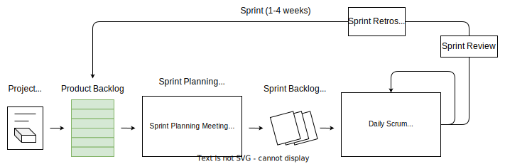 |
|---|
Scrum Process |
Principles#
Transparency
Inspection
Adaptation
Values#
Focus
Courage
Openness
Commitment
Respect
Sprints#
Sprint = timeboxed iteration of < 1 month
No changes affecting the sprint goal are made throughout the sprint
Scope can be clarified/renegotiated as new information becomes available
Can be cancelled by Product Owner before timebox is over due to
goal becomes obsolete
change in business direction/technology conditions
sequence of Activities
Sprint Planning Meeting
Development period
Daily scrums
Sprint review meeting
Sprint retrospective meeting
Team Roles#
Product Owner
Scrum Master
Development Team
Activities (Events/Ceremonies)#
Product Backlog Refinement
Sprint Planning Meeting
Daily Scrums
Sprint Reviews
Sprint Retrospectives
Artifacts#
Product Increment
Product Backlog
Sprint Backlog
Extreme Programming (XP)#
Core Values#
Simplicity
Communication
Feedback
Courage
Respect
Team Roles#
Coach
Customer
Programmers
Testers
Practices#
Whole Team
Planning Games
Small Releases
Customer Tests
Collective Code Ownership
Code Standards
Sustainable Pace
Metaphor
Continuous Integration
Test-Driven Development
Refactoring
Simple Design
Pair Programming
Lean Product Development#
Core Concepts#
Eliminate waste
Empower team
Deliver fast
Optimize the whole
Build quality in
Defer decisions
Amplify learning
Seven Wastes#
Partially done work
Extra processes
Extra features
Task switching
Waiting
Motion
Defects
Kanban#
To Do |
In Progress |
Done |
|---|---|---|
G |
C |
A |
H |
D |
B |
I |
E |
|
J |
F |
Principles#
Visualize workflow
Limit WIP
Manage flow
Make process policies explicit
Improve collaboratively
WIP Limits#
\(\downarrow\) WIP \(\rightarrow\) \(\uparrow\) Team’s productivity
Little’s Law: \(Queue.Duration = m(Queue.Size)\)
Backlog |
Selected (4) |
Develop (3) |
Acceptance (2) |
Deploy |
|---|---|---|---|---|
L |
I |
F |
E |
A |
M |
J |
G |
B |
|
N |
K |
H |
C |
|
O |
D |
|||
P |
||||
Q |
Feature-driven Development (FDD)#
Process#
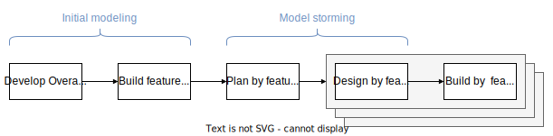 |
|---|
FDD Process |
Practices#
Domain object modeling
Developing by feature
Individual class (code) ownership
Feature teams
Inspections
Configuration management
Regular builds
Visibility of progress/results
Dynamic Systems Development Method (DSDM)#
Process#
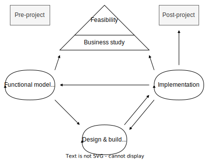 |
|---|
DSDM Process |
Principles#
Focus on the business needs
Deliver on time
Collaborate
Never compromise quality
Build incrementally from firm foundations
Develop iteratively
Communicate continuously and clearly
Demonstrate control
Crystal#
Crystal = family of situationally specific, customzied methodologies coded by color names
\(Criticality = f(Defect.Impact)\)
Criticality |
Clear |
Yellow |
Orange |
Red |
Magenta |
|---|---|---|---|---|---|
Life |
L6 |
L20 |
L40 |
L100 |
L200 |
Essential funds |
E6 |
E20 |
E40 |
E100 |
E200 |
Discretionary funds |
D6 |
D20 |
D40 |
D100 |
D200 |
Comfort |
C6 |
C20 |
C40 |
C100 |
C200 |
Team size |
1-6 |
7-20 |
21-40 |
41-100 |
101-200 |
Agile Leadership#
Align project objectives with personal objectives to improve productivity
Management versus Leadership#
Management Focus |
Leadership |
|---|---|
Tasks/things |
People |
Control |
Empowerment |
Efficiency |
Effectiveness |
Doing things right |
Doing the right things |
Speed |
Direction |
Practices |
Principles |
Command |
Communication |
Servant Leadership#
Duties#
Shield the team from interruptions
Remove impediments to progress
Communicate
“Carry food and water”
Value-Driven Delivery#
Assessing Value#
Financial Assessment Metrics#
Return on Investment (ROI)#
Formula: \(ROI = Investment.Benefits/Investment.Cost\)
Interpretation: \(ROI>1\)
Present Value (PV)#
Formula: \(PV = FV_t/(1+r)^t\)
Net Present Value (NPV)#
Formula: \(NPV=\sum_{t=0}^{T} CF_t/(1+r)^t\)
Interpretation:
IF \(NPV>0\) THEN accept ELSE reject
Select project with higher \(NPV\)
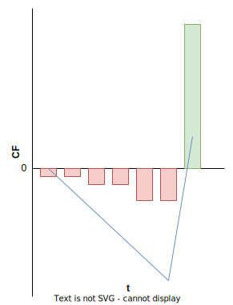 |
|---|
NPV calculation |
Internal Rate of Return (IRR)#
Formula: \(IRR = r : NPV(r) = 0\)
Interpretation:
IF \(IRR>r\) THEN accept ELSE reject
Select project with higher \(IRR\)
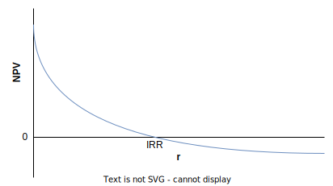 |
|---|
IRR graphical derivation |
Earned Value Management#
|
|---|
EVM calculation |

Symbol |
Formula |
Name |
|---|---|---|
\(AT\) |
Actual Time |
|
\(WS\) |
Work Scheduled |
|
\(WP\) |
Work Performed |
|
\(\mathrm{BAC}\) |
Budget at Completion |
|
\(\mathrm{PD}\) |
Planned Duration |
|
\(AC\) |
Actual Cost |
|
\(PV\) |
\(\mathrm{BAC} \cdot WS\) |
Planned Value |
\(EV\) |
\(\mathrm{BAC} \cdot WP\) |
Earned Value |
\(CV\) |
\(EV-AC\) |
Cost Variance |
\(SV\) |
\(EV-PV\) |
Schedule Variance |
\(CPI\) |
\(EV/AC\) |
Cost Performance Index |
\(SPI\) |
\(EV/PV\) |
Schedule Performance Index |
\(cEAC\) |
\(\mathrm{BAC}\) |
Cost Estimate at Completion |
\(tEAC\) |
\(\mathrm{PD}\) |
Time Estimate at Completion |
\(cETC\) |
\(cEAC-AC\) |
Cost Estimate to Complete |
\(tETC\) |
\(tEAC-AT\) |
Time Estimate to Complete |
\(cVAC\) |
\(cEAC-\mathrm{BAC}\) |
Cost Variance at Completion |
\(tVAC\) |
\(tEAC-\mathrm{PD}\) |
Time Variance at Completion |
Agile Project Accounting#
Break down product/service into MVP
Deliver MVP asap
Exploit opportunities for early benefits by using part of the product/service while completing the remainder
Key Performance Indexes#
Rate of Progress
Remaining Work
Likely Completion Date
Likely Costs Remaining
Regulatory Compliance#
Regulations \(\rightarrow \) safety
A project that is subejct to regulatory compliance require special documentation to prove that required practices were followed
Approaches for integrating regulatory compliance:
Doing compliance work during product development to keep them linked and relevant
Doing compliance work after product development to avoid rework
Prioritizing Value#
Customer-Valued Prioritization#
Work on items that maximize value delivered to customer first
Prioritization Schemes#
MoSCoW#
Definition |
Priority |
|---|---|
Must have |
Top |
Should have |
Medium |
Could have |
Low |
Won’t have this time |
Null |
Kano Analysis#
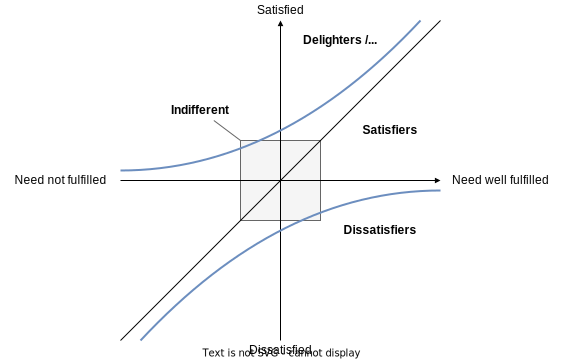 |
|---|
Kano Analysis |
Relative Prioritization/Ranking#
|
|---|
Incorporating changes into a relative priority list |
Deliver Incrementally#
Delivering the “plain-vanilla” version of a product/service allows realizing benefits to get an early \(ROI\)
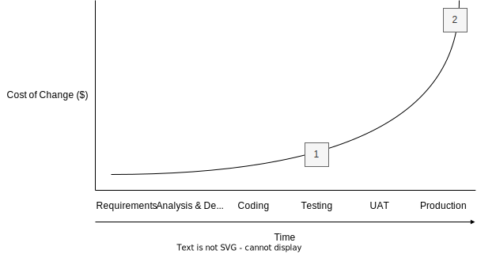 |
|---|
Cost of Change (Image copyright Scott W. Ambler, www.agilemodeling.com) |
Minimum Viable Product (MVP)#
MVP = Package of functionality that is complete enough to be useful to the users or the market, yet still small enough that it does not represent the entire project
Agile Tooling#
Prefer low tech, high touch tools over sophisticated computerized models
Task/Kanban Boards#
Work in Progress (WIP)#
Work started but not started yet
Excessive WIP:
consumes investment capital and delivers no \(ROI\) until converted into product/service
hides bottlenecks/inefficiencies
increases probability of rework
WIP Limits#
Set limit to WIP (to Task/Kanban Board) \(\rightarrow\) Optimize ~~resource utilization~~ throughput
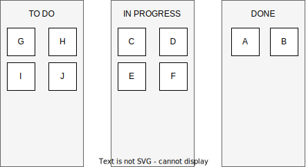 |
|---|
Kanban board without limits |
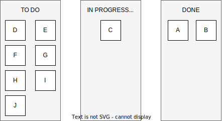 |
|---|
Kanban board with limit too strict |
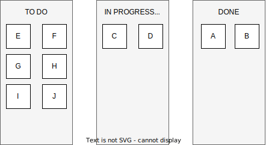 |
|---|
Kanban board with right limit |
Cumulative Flow Diagram (CFDs)#
Used for tracking and forecasting delivery of value
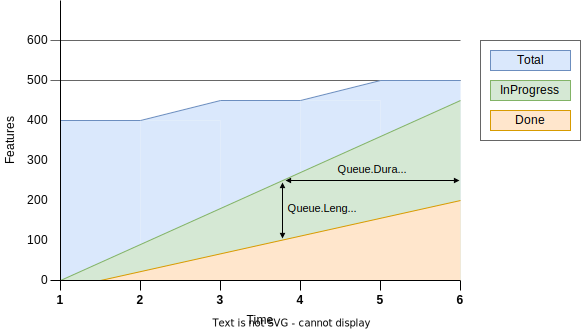 |
|---|
CFD |
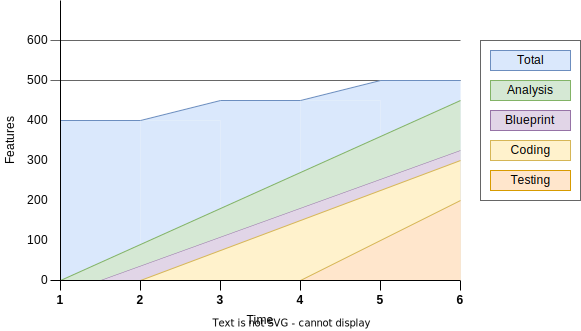 |
|---|
Detailed CFD |
Little’s Law#
\(Queue = In Progress - Done\)
Bottleneck and Theory of Constraints (TOC)#
Figure
(To Do) Agile Contracting#
Verifying and Validating Value#
(To Do) Frequent Verification and Validation#
Testing and Verification in Software Development#
Continuous Integration (CI)#
Objective#
Incorporate new and changed code into project code repository
Find and resolve problems asap
Ensure system still performs as intended after the new code is integrated
Process#
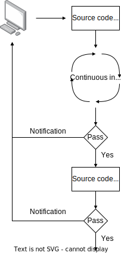 |
|---|
Continuous integration |
Components#
Source code control system
Build tools
Test tools
Scheduler/trigger
Notifications
Pros and Cons#
Pros
Early warning of wrong code
Problems fixed as they occur \(\rightarrow\) \(\downarrow\) cost of change
Immediate feedback
Frequent unit testing
Can be reverted to last stable version
Cons
Require setup time
Cost of procuring machines
Require time to automate system
Test-Driven Development (TDD)/Test-First Development (TFD)#
Philosopy = tests should be written before code
First tests will fail as no code has been written
Start coding \(\rightarrow\) run tests until the code passes all tests
Refactoring = clean up design to make it easier to understand and maintain without changing the code’s behavior
Red, Green, Refactor/Clean = Writing a test that initially fails, adding code until it passes, and refactoring the code
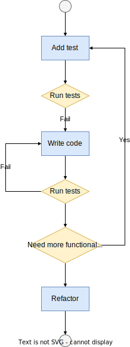 |
|---|
TDD process |
Acceptance Test-Driven Development (ATDD)#
Testing focus on ~~code~~ business
Acceptance tests captured in functional test framework (FIT/FitNesse = Framework Integrated Testing)
Process#
ATDD process |
Discuss the requirements = gather acceptance criteria
Distill tests in a framework-friendly format = structure tests in a table format
Develop the code and hookup the tests = hook tests to the code and run acceptance tests
Demo = exploratory testings
Stakeholder Engagement#
Taking Care of Stakeholders#
Keeping Stakeholders Engaged#
Benefits
Short iterations keep stakeholders interested in the process
Hear about change requests as soon as possible
Identify potential risks, defects, and issues
Use emotional intelligence and interpersonal skills to understand stakeholders’ concerns and find a positive way to engage them with the project
Establish a process for escalating issues that need a high level of authority to resolve
Incorporating Stakeholder Values#
Agile methods focus on bringing project priorities into alignment with stakeholder priorities by
engaging the PO in the prioritization of the backlog, and
inviting stakeholders to planning meetings and retrospectives
Incorporating Community Values#
Values shared by Scrum and XP:
Respect = seek consensus
Don’t judge suggestions
No idea is stupid
Courage
Perform early evaluations
Focus on transparency by showing
Velocity data
Defect rates
Communicating with Stakeholders#
Face-to-Face (F2F) Communication#
Highest efficiency: highest interactivity & highest bandwith/information density
Two-Way Communication#
Information flow between stakeholders = bidirectional
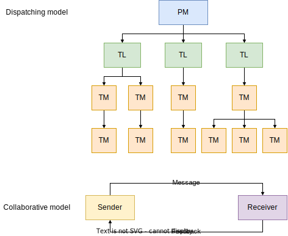 |
|---|
Dispatching vs Collaborative Communication Model |
Knowledge Sharing#
Agile projects are encouraged to take an abundance-based—rather than scarcity-based—attitude toward sharing knowledge
Benefits:
\(\uparrow\) #people who know about something, \(\uparrow\) #people there will be who can help you when you get stuck
Helps balance the workload between team members
Information Radiators#
Information radiators = highly visible displays of information, including:
large charts
graphs
summaries
Data:
Features delivered vs features remaining
Who is working on what
Features selected for the current iteration
Velocity and defect metrics
Retrospective findings
List of threats and issues
Story maps
Burn charts
Working Collaboratively#
Benefits:
Generates wiser decisions
Problem solving
Fosters action
Build social capital
Fosters ownership of collective problems
Workshops#
Tips:
Diverse groups reflect a wider range of viewpoints than just a few experts
Use techniques to prevent dominant individuals and extroverts from monopolizing the discussion
Start with an activity that gets everyone participating within the first five minutes
Brainstorming#
Methods#
Method |
Description |
|---|---|
Quiet Writing |
5-7 minutes to generate list of ideas |
Round-Robin |
Take turns to suggest ideas |
Free-for-All |
Shout ideas |
Collaboration Games#
Game |
Summary |
|---|---|
Remember the Future |
Vision-setting and requirements-elicitation exercise |
Prune the Product Tree |
Helps stakeholders gather and shape requirements |
Speedboat (aka Sailboat) |
Identify threats and opportunities (risks) |
Buy a Feature |
Prioritization exercise |
Bang-for-the-Buck |
Value versus cost rankings |
Remember the Future#
Prune the Product Tree#
Speedboat#
Using Critical Interpersonal Skills#
Emotional Intelligence#
Active Listening#
Facilitation#
Negotiation#
Conflict Resolution#
Participatory Decision Making#
Participatory Decision Models#
Simple Voting#
Thumbs Up/Down/Sideways#
Fist-of-Five Voting#
Highstmith’s Decision Spectrum#
Team Performance#
Agile Team Roles#
Development Team/Delivery Team
Product Owner/Customer/Proxy Customer/Value Management Team/Business Representative
ScrumMaster/Coach/Team Leader
Project Sponsor
Development Team/Delivery Team#
Product Owner/Customer/Proxy Customer/Value Management Team/Business Representative#
ScrumMaster/Coach/Team Leader#
Project Sponsor#
Building Agile Teams#
Development Team
Size < 12
Have complementary skills & generalizing specialists with cross-functional skills rather than experts in one field
Commited to a common purpose
Hold themselves mutually accountable -> shared ownership for project outcomes
Characteristics of High-Performing Teams#
Create a shared vision for the team
Set realistic goals
Limit team size to 12 or fewer members
Build a sense of team identity
Provide strong leadership
Models of Team Development#
Shu-Ha-Ri Model of Skill Mastery#
Acronym |
Description |
|---|---|
Shu |
Obeying the rules |
Ha |
Consciously moving away from the rules |
Ri |
Unconsciously finding an individual path |
Dreyfus Model of Adult Skill Acquisition#
Stage |
Stage |
Commitment |
Decisions |
Perspective |
|---|---|---|---|---|
1 |
Novice |
Detached |
Analytic |
None |
2 |
Advanced beginner |
Detached |
Analytic |
None |
3 |
Competent |
Detached understanding and deciding; involved outcome |
Analytic |
Chosen |
4 |
Proficient |
Involved understanding; detached deciding |
Analytic |
Experienced |
5 |
Expert |
Involved |
Intuitive |
Experienced |
Tuckman Model of Team Formation and Development#
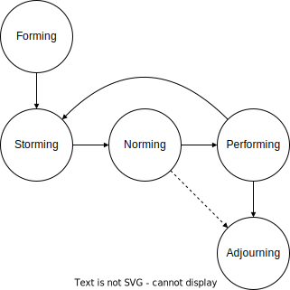 |
|---|
Tuckman model team formation and development stages |
Stage |
Description |
|---|---|
Forming |
Working group |
Storming |
Pseudo team\(\rightarrow\) Potential team |
Norming |
Potential team\(\rightarrow\) Real team |
Performing |
Real team\(\rightarrow\) High performing team |
Adaptive Leadership#
Stage |
Team Stage |
Leadership Style |
|---|---|---|
1 |
Forming |
Directing |
2 |
Storming |
Coaching |
3 |
Norming |
Supporting |
4 |
Performing |
Delegating |
Team Motivation#
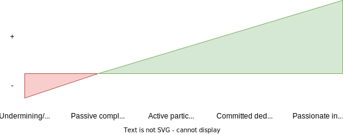 |
|---|
Continuum of Net Contribution |
Training, Coaching, and Mentoring#
Training#
Training = teaching skills/knowledge through practice and instructions
Coaching#
Coaching = facilitated process that helps developing and improving performance
Guidelines for 1-to-1 coaching:
Meet them a half-step ahead
Guarantee safety
Partner with managers
Create positive regard
Mentoring#
Mentoring = professional relantionship where:
Mentor \(\rightarrow\) tackles issues on as an-needed basis
Mentee \(\rightarrow\) free-flowing agenda
Creating Collaborative Team Spaces#
Co-located Teams#
Team Space#
Osmotic Communication#
Global, Cultural, and Team Diversity#
Distributed Teams#
Tracking Team Performance#
Burn Charts#
Burndown Charts#
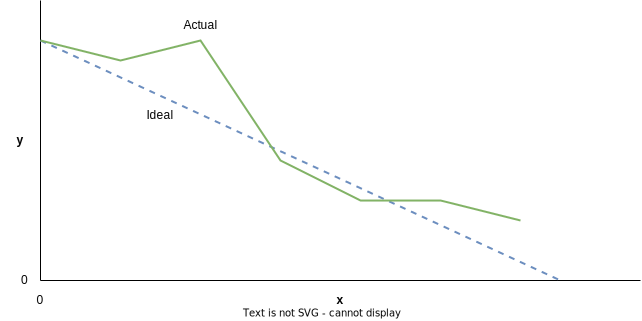 |
|---|
Burndown chart |
Burnup Charts#
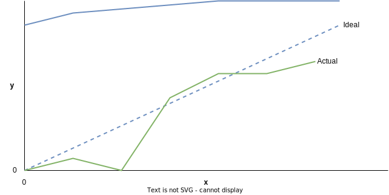 |
|---|
Burnup chart |
Velocity#
\(Velocity=Work/Iteration\), where \(Work=StoryPoints, UserStories, Hours,...\)
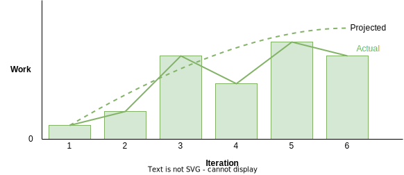 |
|---|
Velocity chart |
Adaptive Planning#
Agile Planning Concepts#
Adaptive Planning#
Agile versus Non-Agile Planning#
Principles of Agile Planning#
Agile Discovery#
Progressive Elaboration#
Value-Based Analysis#
Value-Based Decomposition#
Timeboxing#
Estimate Ranges#
Ideal Time#
Ideal Time = Task duration without distractions
Likely Time = Task duration with distractions
Tools for Sizing and Estimating#
Sizing, Estimating, and Planning#
Decomposition Requirements#
Requirements Are Decomposed “Just in Time”#
User Stories#
Creating the User Stories#
Template 1
As a
<Role>,I want<Functionality>, so that<Business benefit>.
Template 2
Given
When
Then
The Three C’s#
C |
Description |
|---|---|
Card |
|
Conversation |
|
Confirmation |
INVEST: Characteristics of Effective User Stories#
Letter |
Description |
|---|---|
Independent |
|
Negotiable |
|
Valuable |
|
Estimatable |
|
Small |
|
Testable |
User Story Backlog (Product Backlog)#
Refining (Grooming) the Backlog#
Relative Sizing and Story Points#
The Fibonacci Sequence#
Guidelines for Using Story Points#
The team should own the definition of their story points
Story point estimates shouldbe all-inclusive
The point sizes should be relative
When disaggregating estimates, the totals don’t need to match
Complexity, work effort, andrisk should all be included in the estimates
Affinity Estimating#
T-shirt Sizing#
ES < S < M < L < XL < XXL
Story Maps#
Product Roadmap#
Wideband Delphi#
Biases:
Bandwagon
HIPPO
Groupthink
Characteristics:
Iterative
Adaptive
Collaborative
Planning Poker#
Release and Iteration Planning#
Spikes#
Architectural Spike#
Short, timeboxed effort dedicated to “proof of concept” — checking whether the approach the team hopes to use will work for the project
Risk-Based Spike#
Short, timeboxed effort that makes the team sets aside to investigate, reduce or eliminate an issue/threat
Release Planning#
Selecting the User Stories for the Release#
How Much Can We Get Done?#
Estimating Velocity for the First Iteration#
Slicing the Stories#
Iteration Planning#
The Iteration Planning Process#
Discuss the user stories in the backlog
Select the user stories for the iteration
Define the acceptance criteria and write the acceptance tests for the stories
Break down the user stories into tasks
Estimate the tasks
Iteration Planning Summary#
Selecting the User Stories#
Defining the Acceptance Criteria nad Writing the Acceptance Tests#
Estimating the Tasks#
Use Actual Results to Refine Estimates#
Daily Stand-Ups#
Problem Detection and Resolution#
Detecting Problems#
Lead Time and Cycle Time#
\(Task.LT=Time(ToDo \rightarrow Done)\)
Cycle Time, WIP, and Throughput#
\(CT=WIP/TH\)
Throughput and Productivity#
\(TH=Work/Time\)
\(Productivity=Work/TeamMember\)
Defects#
\(Defect.CT=Time(Occurred \rightarrow Fixed)\)
Defect Rates#
\(DefectRate=\#Defect/Time\)
Variance Analysis#
Causes of Variation#
Common cause = average day-2-day differences of doing work
Special cause = greater degree of variance \(\leftarrow\) special/new factors
Trend Analysis#
Metrics
Lagging \(\rightarrow\) view of past
Leading \(\rightarrow\) view of future/what is occurring now/starting to happen \(\rightarrow\) can adapt/replan accordinly
Control Limits#
Managing Threats and Issues#
Risk-Adjusted Backlog#
Creating the Risk-Adjusted Backlog#
\(EVM = Probability \cdot Impact [\$]\)
Risk Severity#
\(Severity=Probability \cdot Impact [l/m/h]\)
Risk Burndown Graphs#
Solving Problems#
Problem Solving as Continuous Improvement#
Engage the Team#
The Benefits of Team Engagement#
By asking the team for a solution, we inherit consensus for the proposal
Engaging the team accesses a broader knowledge base
Team solutions are practical
When consulted, people work hard to generate good ideas
Asking for help shows confidence, not weakness
Seeking others’ ideas models desired behavior
Considerations and Cautions for Engaging the Team#
Involve the team where it can be most helpful
Solve real problems
Team cohesion is necessary
Check in after team or project changes
Be sure to follow through
Continuous Improvement#
Kaizen#
Kaizen = process for continuous improvement
Focus on:
encourage the team
frequently initiate and implement small, incremental improvements
PDCA Cycle = Plan - Do - Check - Act
Continuous Improvement—Process#
Process Tailoring#
Process tailor = adapting our implementation of agile to better fit our project environment
Teams new to agile should use their methodology “out-of-the-box” for a few projects before attempting to change it
All techniques and practices in an agile methodology are designed to work in balance with each other
Hybrid Models#
Agile-Agile Hybrid: Scrum-XP#
Methodology |
Focus |
|---|---|
XP |
Technical guidance |
Scrum |
Project governance |
Agile-Traditional Hybrids#
Implement agile components into linear project execution
Systems Thinking#
Understand the systems-level environment for the project
Figure
Process Analysis#
Process Analysis = reviewing and diagnosing issues with a team’s agile methods
Methodology Anti-Patterns#
One size for all projects
Intolerant
Heavy
Embellished
Untried
Used Once
Success Criteria#
Project got shipped
Leadership remained intact
Team would work the same way again
Methodology Success Patterns#
Interactive, face-to-face communication is the cheapest channel for exchanging information
Excess methodology weight is costly
Larger teams need heavier methodologies
Projects with greater criticality require greater ceremony
Feedback and communication reduce the need for intermediate deliverables
Discipline, skills, and understanding counter process, formality, and coumentation
Efficiency is expendable in nonbottleneck activities
Value Stream Mapping#
Process#
Identify product/service to be analyzed
Create a value stream map of the current process, identifying steps, queues, delays, and information flows
Review the map to find delays, waste, and constraints
Create a new value stream map of the desired future state of the process, optimized to remove or reduce delays, waste, and constraints
Develop a roadmap for creating the optimized state
Plan to revisit the process in the future to continually refine and optimize it
Metrics#
Term |
Formula |
|---|---|
Total cycle time |
\(TCT=VAT+NVAT\) |
Value-added time |
\(VAT\) |
Nonvalue-added time |
\(NVAT\) |
Process cycle efficiency |
\(VAT/TCT=VAT/(VAT+NVAT)\) |
Project Pre-Mortems#
Imagine the Failure
Generate the Reasons for Failure
Consolidate the List
Revisit the Plan
Continuous Improvement—Product#
Reviews#
The Scientific Method#
Product Feedback Loops and Learning Cycles#
Feedback Methods#
Approved Iterations#
Continuous Improvement—People#
Retrospectives#
Benefits#
Improved productivity
Improved capability
Improved quality
Improved capacity
Process#
Stage |
Name |
Typical Time |
|---|---|---|
1 |
Set stage |
6 |
2 |
Gather data |
40 |
3 |
Generate insights |
25 |
4 |
Decide what to do |
20 |
5 |
Close retrospective |
20 |
Set stage#
Activities#
Check-In
Focus On/Off
Inquiry rather than Advocacy
Dialogue rather than Debate
Conversation rather than Argument
Udnerstanding rather than Defending
ESVP
Explorers
Shoppers
Vacationers
Prisoners
Working Agreements
Gather data#
Techniques#
Timeline
Triple Nickels
Color Code Dots
Mad, Sad, Glad
Locate Strengths
Satisfcation Histogram
Team Radar
Like to Like
Generate insights#
Five Whys#
Fishbone Analysis#
Decide what to do#
Close retrospective#
Team Self-Assessments#
Shore’s Team Self-Assessment Scoring Model#
Tabaka’s Team Self-Assessment Model#
Scrum Body of Knowledge#
Notes from SCRUMstudy™ 2022, A Guide to the SCRUM BODY OF KNOWLEDGE (SBOK® GUIDE), Fourth Edition.
Introduction#
Overview of Scrum#
A Scrum project involves a collaborative effort to create a new product, service, or other results defined in the Project Vision Statement.
Projects are impacted by time, cost, scope, quality, resources, organizational capabilities, and other limitations that make it difficult to plan , execute, manage, and ultimately succeed.
Scrum:
is an adaptive, iterative, fast, flexible, and effective framework designed to deliver significant value quickly and throughout a project, and
may also be used to manage the continuous maintenance of products and services, track issues, and manage changes.
A key strength of Scrum is its use of cross-functional, self-organized, and empowered teams who divide their work into short, concentrated work cycles called Sprints.
|
|---|
Figure 1 — Scrum Flow for 1x Sprint |

The Scrum cycle begins with a Stakeholder Meeting, during which the Project Vision is created. The Product Owner (PO) then develops a Prioritized Product Backlog which contains a prioritized list of business and project requirements in the form of User Stories (USs). Each **Sprint **begins with a Sprint Planning Meeting, during which high priority USs are considered for inclusion in the Sprint. A **Sprint **generally lasts one to four weeks and involves the Developers Team (DT) working to create potentially shippable deliverables or product increments. During the Sprint, short, highly focused Daily Standup Meetings are conducted where team members discuss daily progress. The PO can
assess completed deliverables during the Sprint, and
accept the deliverables that meet the predefined Acceptance Criteria (AC).
Toward the end of the Sprint, a Sprint Review Meeting is held during which the PO and relevant business stakeholders are provided a demonstration of the deliverables. The Sprint cycle ends with a Retrospect Sprint Meeting where the team members discuss ways they can improve their work and performance as they move forward into the subsequent Sprint.
Scrum vs. Waterfall PM#
Criterion |
Scrum |
Waterfall |
|---|---|---|
Emphasis on |
People |
Processes |
Documentation |
Minimal - only as required |
Comprehensive |
Process style |
Iterative |
Linear |
Upfront planning |
Low |
High |
Prioritization of requirements |
Base on business value and regularly updated |
Fixed in the project plan |
Quality Assurance |
Customer centric |
Process centric |
Organization |
Self-organized |
Managed |
Management style |
Decentralized |
Centralized |
Change |
Updates to Prioritized Product Backlog |
Formal Change Management System |
Leadership |
Supporting |
Command and control |
Performance measurement |
Business value |
Plan conformity |
Return on Investment |
Early/throughout project life cycle |
End of project life cycle |
Customer involvement |
High throughout the project |
Varies depending on the project life cycle |
Why Use Scrum?#
Some of the key benefits of using Scrum in any project are:
Benefit |
Description |
|---|---|
Adaptability |
Empirical process control and iterative delivery make projects adaptable and open to incorporating change |
Transparency |
All information radiators like a Scrumboard and Sprint Burndown Chart are shared, leading to an open work environment |
Continuous Feedback |
Continuous feedback is provided through the Conduct Daily Standup and Demonstrate and Validate Sprint processes |
Continuous Improvement |
The deliverables are improved progressively Sprint by Sprint , through the Refine Prioritized Product Backlog process |
Continuous Value Delivery |
Iterative processes enable the continuous delivery of value through the Ship Deliverables process as frequently as the customer requires |
Sustainable Pace |
Scrum processes are designed such that the people involved can work at a sustainable pace that they can, in theory, continue indefinitely |
Early High Value Delivery |
The Create Prioritized Product Backlog process ensures that the highest value requirements of the customer are satisfied first. |
Efficient Development Process |
Time-boxing and minimizing non-essential work leads to higher efficiency levels. |
Motivation |
The Conduct Daily Standup and Retrospect Sprint processes lead to greater levels of motivation among employees |
Faster Problem Resolution |
Collaboration and colocation of cross-functional teams lead to faster problem-solving |
Effective Deliverables |
The Create Prioritized Product Backlog process and regular reviews after creating deliverables ensure effective deliverables to the customer |
Customer Centric |
Emphasis on business value and having a collaborative approach to engage business stakeholders ensures a customer-oriented framework |
High Trust Environment |
Conduct Daily Standup and Retrospect Sprint processes promote transparency and collaboration, leading to a high-trust work environment ensuring low friction among employees |
Collective Ownership |
The Commit User Stories process allows team members to take ownership of the project and their work, leading to better quality |
High Velocity |
A collaborative framework enables highly skilled cross-functional teams to achieve their full potential and high velocity |
Innovative Environment |
The Retrospect Sprint and Retrospect Release processes create an environment of introspection, learning, and adaptability leading to an innovative and creative work environment |
Scalability#
To be effective, DT should ideally have 6 to 10 members. This practice may be the reason for the misconception that the Scrum framework can only be applied to small projects. However, the framework can easily be scaled for effective use in large projects, programs, and portfolios. In situations where the DT size exceeds ten people, multiple Development Teams can be formed to work on the project.
The logical approach of the guidelines and principles in this framework can be used to manage projects of any size, spanning geographies and organizations. Large projects may have multiple DTs working in parallel, making it necessary to synchronize and facilitate the flow of information and enhance communication. Large or complex projects are often implemented as a program or portfolio.
Framework#
The Scrum framework consists of three areas:
principles,
aspects, and
processes.
|
|---|
Figure 2 — Scrum Framework |

Principles#
Scrum principles are the core guidelines for applying the Scrum framework and should mandatorily be used in all Scrum projects.
The six Scrum principles presented are:
Principle |
Description |
|---|---|
Empirical Process Control |
Aids learning through experimentation, especially when the problem is not well defined or when there are no clear solutions |
Self-organization |
Today’s workers deliver significantly greater value when self-organized, resulting in better team buy-in, shared ownership, and an innovative and creative environment that is more conducive to growth |
Collaboration |
Awareness, articulation, and appropriation. Project delivery is a shared value-creation process with teams working and interacting together, as well as with the customer and other business stakeholders, to deliver the greatest value |
Value-based Prioritization |
Focus on delivering maximum business value, from early in the project and continuing throughout |
Time-boxing |
Time is considered a limiting constraint in Scrum and is used to help effectively manage project planning and execution. |
Iterative Development |
How to better manage changes and build products that satisfy customer needs |
Aspects#
Organization
Core Roles
Product Owner: the person responsible for achieving maximum business value for the project, articulating customer requirements and maintaining business justification for the project.
Scrum Master: facilitator who ensures that the Development Team is provided with an environment conducive to completing the project successfully, guides, facilitates, and teaches Scrum practices to everyone involved in the project; clears impediments for the team, ensures that Scrum processes are being followed.
Development Team: group or team responsible for understanding the requirements specified by the Product Owner and creating the project deliverables.
Non-core Roles
Business Stakeholder(s)
Scrum Guidance Body
Vendors
Business Justification
Proper business assessment before starting any project helps key decision makers understand the business need for a change or a new product or service, the justification for moving forward with a project, and its viability
It is impossible to guarantee project success at completion, irrespective of the size or complexity of a project \(\rightarrow\) Considering this uncertainty of achieving success, Scrum attempts to start delivering results as early in the project as possible.
This early delivery of results, and thereby value, provides an opportunity for reinvestment and proves the worth of the project to interested business stakeholders.
Quality
Quality is the ability of the completed product or deliverables to meet the Acceptance Criteria and achieve the business value expected by the customer.
To ensure a project meets quality requirements, Scrum adopts an approach of continuous improvement whereby the team learns from experience and stakeholder engagement to constantly keep the Prioritized Product Backlog updated with any changes in requirements
The Prioritized Product Backlog is simply never complete until the closure or termination of the project
Any changes to the requirements reflect changes in the internal and external business environment and allow the team to continually work and adapt to achieve those requirements
Change
Every project, regardless of its method or framework used, is exposed to change.
It is imperative that project team members understand that the Scrum development processes are designed to embrace change.
Organizations should try to maximize the benefits that arise from change and minimize any negative impacts through diligent change management processes by the principles of Scrum.
A primary principle of Scrum is its acknowledgment that business stakeholders (e.g., customers, users, and sponsors) change their minds about what they want and need throughout a project (sometimes referred to as requirements churn), and it is difficult, if not impossible, for business stakeholders to define all requirements during project initiation.
Scrum projects welcome change using short, iterative Sprints that incorporate customer feedback on each Sprint’s deliverables.
This enables the customer to regularly interact with the Development Team members, view deliverables as they are ready, and change requirements if needed earlier in the Sprint.
Also, the portfolio or program management teams can respond to Change Requests about Scrum projects applicable at their level.
Risk
Risk is defined as an uncertain event or set of events that can affect the objectives of a project and may contribute to its success or failure.
Risks that are likely to positively impact the project are referred to as opportunities, whereas threats are risks that could affect the project negatively.
Managing risk must be done proactively, and it is an iterative process that should begin at project initiation and continue throughout the project’s lifecycle.
The process of managing risks should follow some standardized steps to ensure that risks are identified and evaluated and a proper course of action is determined and acted upon accordingly.
Risks should be identified, assessed, and responded to based on two factors — the probability of each risk’s occurrence and the possible impact in the event of such occurrence.
Risks with a high probability and impact value (determined by multiplying both factors) should be addressed before those with a relatively lower value. In general, once a risk is identified, it is important to understand the risk with regards to the probable causes and the potential effects if the risk occurs.
Processes#
Phase |
Fundamental Scrum Processes |
|---|---|
Initiate |
Create Project Vision |
Identify Scrum Master and Business Stakeholder(s) |
|
Form Development Team |
|
Develop Epic(s) |
|
Create Prioritized Product Backlog |
|
Conduct Release Planning |
|
Plan and Estimate |
Create User Stories |
Estimate User Stories |
|
Commit User Stories |
|
Identify Tasks |
|
Estimate Tasks |
|
Update Sprint Backlog |
|
Implement |
Create Deliverables |
Conduct Daily Standup |
|
Refine Prioritized Product Backlog |
|
Review and Retrospect |
Demonstrate and Validate Sprint |
Retrospect Sprint |
|
Release |
Ship Deliverables |
Retrospect Release |
Initiate#
The processes relevant to the Initiate phase are as follows:
Create Project Vision
The project business case is reviewed to create a Project Vision Statement that will serve as the inspiration and provide a focus for the entire project
The PO is identified
Identify Scrum Master and Business Stakeholder(s): The SM and business stakeholders are identified using specific selection criteria.
Form Development Team: DT members are identified
Develop Epic(s)
The Project Vision Statement serves as the basis for developing Epics
User Group Meetings may be held to discuss appropriate Epics
Create Prioritized Product Backlog
Epic(s) are refined, elaborated, and then prioritized to create a Prioritized Product Backlog for the project.
The Done Criteria is also established
Conduct Release Planning
With support from the Development Team, the PO develops a Release Planning Schedule, which is essentially a phased deployment schedule that can be shared with the project’s business stakeholders.
Length of Sprint is also determined
Plan and Estimate#
The processes relevant to the Plan and Estimate phase are as follows:
Create User Stories
User Stories and their related Acceptance Criteria are created by the Product Owner and incorporated into the Prioritized Product Backlog
User Stories are designed to ensure that the customer’s requirements are clearly depicted and can be fully understood by all business stakeholders
Estimate User Stories: the Development Team, supported by the Scrum Master, estimates the User Stories and identifies the effort required to develop the functionality described in each User Story
Commit User Stories
The Development Team commits to delivering Product Owner-approved User Stories for a Sprint.
The results of this process are the committed
User Stories , and
Sprint Backlog
Identify Tasks—In this process, the committed User Stories are broken down into specific tasks and compiled into a Task List
Estimate Tasks: The Scrum Core Team estimates the effort required to accomplish each task in the Task List
Update Sprint Backlog; The Scrum Core Team updates the Sprint Backlog with further details about the tasks as part of the Sprint Planning Meeting
Implement#
The processes relevant to the Implement phase are as follows:
Create Deliverables
The Development Team works on the tasks in the Sprint Backlog to create Sprint Deliverables
A Scrumboard is often used to track the work and activities
Issues or problems faced by the Development Team should be updated in an Impediment Log
Conduct Daily Standup: every day, a highly focused, Time-boxed meeting, referred to as the Daily Standup Meeting , is conducted to update each other on their individual progress and any impediments they may be facing
Refine Prioritized Product Backlog
The Prioritized Product Backlog is continuously updated and maintained
A Prioritized Product Backlog Review Meeting is held, in which any changes or updates to the backlog are discussed and incorporated into the Prioritized Product Backlog as appropriate.
Review and Retrospect#
The processes relevant to the Review and Retrospect phase are as follows:
Demonstrate and Validate Sprint
The Development Team demonstrates the Sprint deliverables to the Product Owner and relevant business stakeholders in a Sprint Review Meeting
The purpose of this meeting is to secure approval and acceptance of the Sprint User Stories by the Product Owner
Retrospect Sprint
The Scrum Master and Development Team meet to discuss the lessons learned throughout the Sprint
This information is documented and should be applied to future Sprints.
Often, as a result of this discussion, there may be agreed-on actionable improvements or updated Scrum Guidance Body recommendations.
Release#
The processes relevant to the Release phase are as follows:
Ship Deliverables
All deliverables from the accepted User Stories of previously completed Sprints are delivered or transitioned to the relevant business stakeholders
A formal Working Deliverables Agreement documents the successful completion of the release
Retrospect Release
Business stakeholders and Scrum Core Team members assemble to reflect on the release and identify, document and internalize the lessons learned.
Often, these lessons lead to the documentation of agreed actionable improvements to be implemented in future projects.
SEBoK#
Notes from Guide to the Systems Engineering Body of Knowledge (SEBok), version 2.9
Part 3: Systems Engineering and Management (SE&M)#
Systems Engineering and Management#
Systems Engineering and Management (SE&M) articles provide system lifecycle best practices for defining and executing interdisciplinary processes to ensure that customer needs are satisfied with a technical performance, schedule, and cost compliant solution.
SE&M Knowledge Areas#
The SE&M articles are organized into the following Knowledge Areas (KAs).
Systems Engineering STEM Overview
Model-Based Systems Engineering (MBSE)
Systems Life Cycle Approaches
System Life Cycle Models
Systems Engineering Management
Business and Mission Analysis
Stakeholder Needs Definition
System Architecture Definition
Detailed Design Definition
System Analysis
System Realization
System Implementation
System Integration
System Verification
System Transition
System Validation
System Operation
System Maintenance
System Specialty Engineering
Logistics
Service Life Management
Systems Engineering Standards
Systems Engineering & Management Overview#
The role of Systems Engineering (SE) is to define system, constraints, allocations, behavior and structure characteristics to satisfy customer needs.
The system is defined in terms of
hierarchical structural elements, and
their behavior interactions.
The interactions include the exchange of data, energy, force, or mass which modifies the state of the cooperating elements resulting in emergent, discrete, or continuous behaviors.
The behaviors are at sequential levels of aggregation (bottoms-up) or decomposition (top-down) to satisfy requirements, constraints, and allocations.
SE collaborates within an integrated product team with electrical, mechanical, software, and specialty engineering to define the subsystem and component detailed design implementations to develop a holistic technical solution.
Model-Based Systems Engineering (MBSE)#
Model-based Systems Engineering (MBSE)
is a paradigm that uses formalized representations of systems, known as models, to support and facilitate the performance of SE tasks throughout a system’s life cycle.
is frequently contrasted with legacy document-based approaches where systems engineering captures system design information via multiple independent documents in various non-standardized formats.
consolidates of system information in system design models, which provide primary SE artifacts.
These system models, which are generally expressed in a standardized modelling language such as Systems Modeling Language (SysML®) express key system information in a concise, consistent, correct, and coherent format.
When implemented properly, MBSE models permit the standardized consolidation and integration of system knowledge across engineering disciplines and subsystems and streamline key systems engineering tasks while also minimizing developmental risk.
System Models#
Definition of a model#
Models
are representations that are used to capture, analyze, and/or communicate information about a system or concept.
can vary in scope, purpose, and type, and can be utilized both individually as stand-alone entities as well as in concert with each other as part of an integrated set.
Model Properties#
A model can be described and classified with respect to the following properties:
Scope
Domain
Formality
Abstraction
Physical/conceptual
Descriptive/analytical
Fidelity
Completeness
Integration
Quality
Criteria for Effective MBSE Models#
While a successful MBSE workflow can involve the use of several different interconnected or standalone models of various scopes and types based on user needs, the main system model in an MBSE projects generally should have the following characteristics:
A scope which matches the scope of the project (i.e., it should encompass the entire SoI);
Representative of a holistic perspective from all relevant domains.
Strict compliance with a previously established standardized modeling language, whether that be an existing language such as SysML® or a custom formalism.
Fully abstracted, to only include relevant information appropriate for the SoI and its desired use-case(s).
Conceptual in nature, to permit the capture of intangible information (e.g., system requirements)
Containing a description of the system functional and structural architecture at minimum and supplemented by integrated analytical/quantitative property descriptions as needed.
Demonstrating sufficient fidelity to capture relevant system elements and behavior.
Fully complete given its scope.
Integrated with any necessary auxiliary models.
Sufficiently high-quality as to meet the needs of those designing, developing, or otherwise working on the system. In terms of content, effective system models are expected to capture key system information regarding requirements, system functionality/behavior, structure/form, properties, and interconnections between system components.
Digital Twins#
When MBSE models of physical systems are built with sufficient completeness and fidelity, it is possible for them to function as “digital twins” of the systems they represent.
Digital twins provide a means of accurately representing a system’s form and function throughout the system’s lifecycle, all within a digital environment.
Creating such digital twins allow
testing, analysis, and optimization of systems in a virtual environment at
no risk to the actual system of interest, and
a greatly reduced cost/burden.
representing the behavior of systems under conditions which would be impractical or impossible to induce under experimental conditions, thereby making it possible to obtain information not obtainable via study of the original physical system.
Knowledge Area: Systems Life Cycle Approaches#
Systems Life Cycle Approaches#
Key principles:
life cycle,
life cycle model, and
life cycle processes.
A generic SE paradigm is described; this forms a starting point for discussions of more detailed life cycle knowledge.
Topics#
This KA contains the following topics:
Generic Life Cycle Model
Applying Life Cycle Processes
Life Cycle Processes and Enterprise Need
Life Cycle Terminology#
The term “life cycle” is used to describe
the complete life of an instance of a system-of-interest (SoI), and
the managed combination of multiple such instances to provide capabilities which deliver stakeholder satisfaction.
A life cycle model:
identifies the major stages that a specific SoI goes through, from its inception to its retirement.
is generally implemented in development projects and are strongly aligned with management planning and decision making.
Generic Systems Engineering Paradigm#
Overall goals of any SE effort:
understanding of stakeholder value,
selection of a specific need to be addressed,
transformation of that need into a system (the product or service that provides for the need), and
use of that product or service to provide the stakeholder value.
SoI’s identified in the formation of a System Breakdown Structure (SBS). SoI 1 is broken down into its basic elements, which in this case are systems as well (SoI 2 and SoI 3). These two systems are composed of system elements that are not refined any further.
Generic Life Cycle Model#
Each SoI has an associated LC model.
The generic LC model below applies to a single SoI.
SE must generally be synchronized across a number of tailored instances of such LC models to fully satisfy stakeholder needs.
|
|---|
System Breakdown Structure |

|
|---|
SoI LC/Processes |

A Generic System Life Cycle Model#
There is no single “one-size-fits-all” system LC model that can provide specific guidance for all project situations.
The model is defined as a set of stages, within which technical and management activities are performed.
The stages are terminated by decision gates, where the key stakeholders decide whether
to proceed into the next stage,
to remain in the current stage, or
to terminate or re-scope related projects.
Stages:
Definition
Concept Definition
System Definition
System Realization
System Production, Support, and Utilization (PSU)
System Production
System Support
System Utilization
System Retirement
Applying Life Cycle Processes#
The Generic Life Cycle Model describes a set of life cycle stages and their relationships.
In defining this we described some of the technical and management activities critical to the success of each stage.
While this association of activity to stage is important, we must also recognize the through life relationships between these activities to ensure we take a systems approach.
SE technical and management activities are defined in a set of life cycle processes.
These group together closely related activities and allow us to describe the relationships between them.
In this topic, we discuss a number of views on the nature of the inter-relationships between process activities within a life cycle model.
In general, the technical and management activities are applied in accordance with the principles of concurrency, iteration and recursion described in the generic systems engineering paradigm.
These principles overlap to some extent and can be seen as related views of the same fundamental need to ensure we can take a holistic systems approach, while allowing for some structuring and sequence of our activities.
The views presented below should be seen as examples of the ways in which different SE authors present these overlapping ideas.
Life Cycle Process Terminology#
Process#
Is a series of actions or steps taken in order to achieve a particular end, and
Can be performed by humans or machines transforming inputs into outputs.
Are interpreted in several ways, including
technical,
LC,
business, or
manufacturing flow processes.
Requirement#
Are something that are needed/wanted but may not be compulsory in all circumstances,
May refer to product/process characteristics/constraints.
Different understandings of requirements are dependent upon
process state,
level of abstraction,
and type (e.g. functional, performance, constraint).
May have multiple interpretations over time.
Exist at multiple levels of enterprise/systems with multiple levels of abstraction, ranging from
highest level of the enterprise capability/customer need to
lowest level of the system design.
Need to be defined at the appropriate level of detail for the level of the entity to which they apply.
Architecture#
Organizational structure of a system, whereby the system can be defined in different contexts.
Is the art or practice of designing the structures.
Can apply for a system product, enterprise, or service.
Closely related to framework, as they are ways of representing architectures.
Life Cycle Process Concurrency#
In the Generic LC Model, the execution of process activities is not compartmentalized to particular LC stages.
|
|---|
RUP Hump |

The lines on this diagram represent the amount of activity for each process over the generic life cycle. The peaks (or humps) of activity represent the periods when a process activity becomes the main focus of a stage. The activity before and after these peaks may represent through life issues raised by a process focus, e.g. how likely maintenance constraints will be represented in the system requirements. These considerations help maintain a more holistic perspective in each stage, or they can represent forward planning to ensure the resources needed to complete future activities have been included in estimates and plans, e.g. all resources needed for verification are in place or available. Ensuring this hump diagram principle is implemented in a way which is achievable, affordable and appropriate to the situation is a critical driver for all life cycle models.
Life Cycle Process Iteration#
The concept of iteration applies to LC stages within a LC model, and also applies to processes.
|
|---|
Concept and System Definition processes iterations |

Figure 3 below gives an example of the iteration between the other life cycle processes. The iterations in this example relate to the overlaps in process outcomes shown in Figure 1. They either allow consideration of cross process issues to influence the system definition (e.g. considering likely integration or verification approaches might make us think about failure modes or add data collection or monitoring elements into the system) or they allow risk management and through life planning activities to identify the need for future activities.
|
|---|
Concept and System Definition processes iterations — System realization |

Life Cycle Process Recursion#
The comprehensive definition of a SoI is generally achieved using decomposition layers and system elements.
Figure 4 presents a fundamental schema of a SBS. The comprehensive definition of a SoI is generally achieved using decomposition layers and system elements. In each decomposition layer and for each system, the System Definition processes are applied recursively because the notion of “system” is in itself recursive; the notions of SoI, system, and system element are based on the same concepts (see Part 2).
|
|---|
Concept and System Definition processes iterations — Recursion |

Systems Approach to Solution Synthesis#
Top-Down Approach: From Problem to Solution#
In a top-down approach, concept definition activities
are focused primarily on understanding
the problem,
the operational needs/requirements within the problem space, and
the conditions that constrain the solution and bound the solution space.
determine
the mission context,
the mission analysis, and
te needs to be fulfilled in that context by a new or modified system (i.e. the SoI), and
address stakeholder needs and requirements.
consider functional, behavioral, temporal, and physical aspects of one or more solutions based on the results of concept definition.
System analysis:
considers the advantages and disadvantages of the proposed system solutions both in terms of
how they satisfy the needs established in concept definition, as well as
the relative cost, time scales and other development issues.
requires further refinement of the concept definition to ensure all legacy relationships and stakeholders relevant to a particular solution architecture have been considered in the stakeholder requirements.
The outcomes of this iteration between Concept Definition and System Definition define
a required system solution and
its associated problem context, which are used for
System Realization,
System Deployment and Use, and
Product and Service Life Management of one or more solution implementations.
In this approach, problem understanding and solution selection activities are
completed in the front-end portion of system development and design and then
maintained and refined as necessary throughout the LC of any resulting solution systems.
Depending upon the LC model, top-down activities can be
sequential,
iterative,
recursive, or
evolutionary.
Bottom-Up Approach: Evolution of the Solution#
In some situations, the concept definition activities
determine the need to evolve existing capabilities or
add new capabilities to an existing system.
During the concept definition, the alternatives to address the needs are evaluated.
Engineers are then led to reconsider the system definition in order to modify or adapt some structural, functional, behavioral, or temporal properties during the product or service life cycle for a changing context of use or for the purpose of improving existing solutions.
Reverse engineering is often necessary to
enable system engineers to (re)characterize the properties of the system-of-interest (SoI) or its elements.
ensure that system engineers understand the SoI before beginning modification.
A bottom-up approach is necessary for
analysis purposes, or
(re)using existing elements in the design architecture.
Changes in the context of use or a need for improvement can prompt this. In contrast, a top-down approach is generally used to define an initial design solution corresponding to a problem or a set of needs.
Solution Synthesis#
In most real problems, a combination of bottom-up and top-down approaches provides the right mixture of innovative solution thinking driven by need, and constrained and pragmatic thinking driven by what already exists.
This is often referred to as a “middle-out” approach.
As well as being the most pragmatic approach, synthesis has the potential to
keep the life cycle focused on whole system issues, and
allow the exploration of the focused levels of detail needed to describe realizable solutions.
Knowledge Area: System Life Cycle Models#
Categories of Life Cycle Model#
Categories of potential LC process models:
Pre-specified
single-step
multi-step
Evolutionary
sequential
opportunistic
concurrent
Interpersonal and emergent
The emergence of integrated, interactive hardware-software systems made pre-specified processes potentially harmful, as the most effective human-system interfaces tended to emerge with its use. This led to the introduction of more lean approaches to concurrent hardware-software-human factors approaches such as:
concurrent vee models, and
Incremental Commitment Spiral Model.
System Life Cycle Process Drivers and Choices#
LC processes:
impacted by many organizational factors,
impact all other aspects of system design and development.
Fixed-Requirements and Evolutionary Development Processes#
Aside from the traditional, pre-specified, sequential, single-step development process (identified as Fixed Requirements), there are several models of evolutionary development processes; however, there is no one-size-fits-all approach that is best for all situations.
For rapid-fielding situations, an easiest-first, prototyping approach may be most appropriate. For enduring systems, an easiest-first approach may produce an unscalable system, in which the architecture is incapable of achieving high levels of performance, safety, or security.
In general, system evolution now requires
much higher sustained levels of SE effort,
earlier and continuous integration and testing,
proactive approaches to address sources of system change,
greater levels of concurrent engineering, and
achievement reviews based on evidence of feasibility versus plans and system descriptions.
Evolutionary development processes or methods have been in use since the 1960s (and perhaps earlier).
They allow a project to provide an initial capability followed by successive deliveries to reach the desired SoI.
This practice is particularly valuable in cases in which
rapid exploration and implementation of part of the system is desired,
requirements are unclear from the beginning, or are rapidly changing,
funding is constrained,
the customer wishes to hold the SoI open to the possibility of inserting new technology when it becomes mature, and
experimentation is required to develop successive versions.
In evolutionary development a capability of the product is developed in an increment of time. Each cycle of the increment subsumes the system elements of the previous increment and adds new capabilities to the evolving product to create an expanded version of the product in development. This evolutionary development process, that uses increments, can provide a number of advantages, including:
continuous integration, verification, and validation of the evolving product,
frequent demonstrations of progress,
early detection of defects,
early warning of process problems, and
systematic incorporation of the inevitable rework that may occur.
Primary Models of Incremental and Evolutionary Development#
|
|---|
Primary models of incremental and evolutionary development |

Type |
Subtype |
Pros |
Cons |
Examples |
|---|---|---|---|---|
Pre-specified |
Single-step |
Efficient |
Difficulties with rapid change |
Simple manufactured products |
Multi-step |
Early initial capability |
Emergent requirements or rapid change |
Vehicle platform plus value-adding pre-planned product improvements (PPPIs) |
|
Evolutionary |
Sequential |
Adaptability to change |
Easiest-first |
Small: Agile |
Opportunistic |
Mature technology upgrades |
Emergent requirements or rapid change |
Stable development |
|
Concurrent |
Emergent requirements or rapid change |
Overkill on small or highly stable systems |
Rapid, emergent development |
Incremental and Evolutionary Development Decision Table#
Type |
Subtype |
Stable, pre-specific |
Ok to wait for full system |
Need to wait for |
Need to wait for |
|---|---|---|---|---|---|
Pre-specified |
Single-step |
True |
True |
||
Multi-step |
True |
False |
|||
Evolutionary |
Sequential |
False |
False |
True |
|
Opportunistic |
False |
False |
False |
True |
|
Concurrent |
False |
False |
False |
False |
Evolutionary Sequential SLC Model: Vee#
|
|---|
Left Side of the Sequential Vee Model |

|
|---|
Stages, Purposes, and Major Decision Gates |

|
|---|
Vee Activity Diagram |

|
|---|
Right Side of the Sequential Vee Model |

Evolutionary Incremental SLC Models#
Evolutionary Approach#
|
|---|
Evolutionary Approach |

Incremental Approach#
Evolutionary Concurrent LC Model: Incremental Commitment Spiral#
Each spiral addresses requirements and solutions concurrently, rather than sequentially, as well as
products and processes,
hardware,
software,
human factors aspects, and
business case analyses of alternative product configurations/product line investments.
Stakeholders
consider the risks and risk mitigation plans, and
decide on a course of action.
If the risks are acceptable and covered by risk mitigation plans, the project proceeds into the next spiral.
The development spirals after the first development commitment review follow the three-team incremental development approach for achieving both agility and assurance.
|
|---|
Phased View of the Generic Incremental Commitment Spiral Model Process |

Agile and Lean Processes#
Agile development methods can be used to support iterative LC models, allowing flexibility over a linear process that better aligns with the planned LC for a system.
Lean processes are often associated with agile methods, although they are more scalable and applicable to high-assurance systems.
Scrum#
Architected Agile Methods#
Over the last decade, several organizations have been able to scale up agile methods by using two layers of ten-person Scrum teams.
This involves, among other things, having each Scrum team’s daily meeting followed up by a daily meeting of the Scrum team leaders discussing up-front investments in evolving system architecture (Boehm et al. 2010).
|
|---|
Architected Agile Process |

System Life Cycle Process Models: Agile Systems Engineering#
A system LC starts at the concept definition phase, moves through stages until completion of this system, as defined in the concept definition stage.
A model representation of the LC may be
physical,
data, or
graphic.
The process describes the steps to accomplish each stage of the LC including input to and output from this stage.
Today’s complex and increasingly highly connected systems face rapid obsolescence under the stress of technological change, environmental change, and rapidly evolving mission needs. For these systems to remain robust against disruption they must be architected to agilely adapt. To meet these needs, the system must be assessed to apply the process that best serves the system, subsystem or component of the SoI.
It is important to determine the best LC to use for the SoI early in the concept definition phase.
On a program that is going to operate agilely, especially if it will be a hybrid model with agile, and other LC models it is important to define and harmonize them at key integration points based on
hardware or
other long-lead item maturity.
In the Agile SE process, the systems engineer works in an iterative, incremental manner, continually modeling, analyzing, developing, and trading options to bring the definition of the system solution into focus.
An example of this work will be analyzing and maintaining
the requirements,
the architectural model of the higher-level requirements, and
linkage from those high-level requirements to the analyzed lower-level requirements.
the interfaces are defined and followed as the development progresses
Frameworks#
The Agile SE process steps that are performed in each of the stages often include:
Define the highest priority and/or highest risk item while keeping design options open.
Design the solutions to meet those requirements, develop their products, perform tests, and demonstrate that product.
For large products in development where multiple teams integrate their work items together to show a demonstratable product, several iterations may be needed to get to that point.
Prior to starting an increment, all teams working to produce demonstrable products, should meet to plan their work, identify dependencies between the teams and establish commitments to meet the plan.
Release product to stakeholders and plan the next increment of work.
This Agile SE Framework aligns with the Scaled Agile Framework (SAFe) depiction of
teams working program and
team backlogs using iterative development.
SAFe
is a framework that implements the principles of iterative development,
represents how a large system may have multiple LC processes being followed in parallel over time
key decision points need to be aligned between the multiple LC processes.
There are many agile approaches that a program could use as is or combined to adapt to what works best for a given domain.
For a complex system with changing requirements the assessment may result in the decision to use an incremental, iterative approach for development.
Regardless of which model or framework is selected a program starts with a vision, a budget and usually a period of performance. Then the program’s stakeholders identify the highest value capability to develop first The list of capabilities is prioritized so that the long-term development is visible. However, this prioritized order may change as work progresses. What is known about the intended product may have well defined requirements and architecture representations and what is conceptual will have those requirements and designs developed incrementally as time progresses.
This incremental method of development is enabled by the use of
an open system architecture,
MBSE tools,
Set-based design,
design thinking,
continuous integration,
continuous development,
architecture patterns,
microservice architecture, and
Lean sengineering.
Knowledge Area: Systems Engineering Management#
Systems Engineering Management#
Discussion#
Single
SE
Needs and Opportunities Analysis
Operational Concept Development
System Scoping and Requiremens Definition
Architecture Definition
Trade-off Analysis, Modeling, and Simulation
P/SM
Staffing, Organizing, Directing
Cost, Schedule, Performance, Risk Monitoring and Control
Operations Planning and Presentation
Operations Management
SI
Production Line Preparation
Production
Production Control
Testing
Double
SE + P/SM
Business Case Analysis
Systems Engineering Management
SE + SI
Production Planning and Analysis
System Integration
P/SM + SI
Supply Chain Management
Systems Implementation Management
Triple
SE + SI + P/SM
Life Cycle Planning and Estimating
Change Analysis and Management
Q&A, V&V, Continuous Process Improvement
Knowledge Area: Systems Engineering and Industrial Engineering#
Systems Engineering#
A transdisciplinary and integrative approach to enable the successful realization, use, and retirement of engineered systems, using systems principles and concepts, and scientific, technological, and management methods.
Industrial Engineering#
Venn Diagram Comparison#
SE
Business/Mission Analysis
Stakeholder Needs & Requirements
System Requirements
System Architecture (Logical and Physical)
Systems Design and Engineering
Systems Analysis
Implementation
Systems Integration
Systems Verification
Systems Validation
System Operation
IE
Work Design Measurement
Engineering Economics
Facilities Engineering & Management
Operations Engineering & Management
Supply Chain Management
Safety
Design & Manufacturing Engineering
SE + IE
OR & Analysis
Quality & Reliability Engineering
Ergonomics & Human Factors
Engineering Management
Information Engineering
Product Design & Development
Systems Deployment
Updates, Upgrades, Modernization
Service Life Extension
System Maintenance
Logistics
Disposal & Retirement
Roles in a System Life Cycle#
Stage |
Stage |
Role |
Process |
|---|---|---|---|
1 |
Establish System Need |
SE |
|
2 |
Design and Develop |
DE |
Design |
3 |
Produce System |
IE |
Supply Chain Management |
4 |
Deploy System |
IE |
Transportation |
5 |
Operate System |
SE |
Reliability Growth |
6 |
Retire System |
IE/SE |
Knowledge Area: Systems Engineering and Project Management#
Relationships between Systems Engineering and Project Management#
Overlap#
There is a great deal of significant overlap between the scope of SE and other resources and the scope of PM.
These sources describe the importance of
understanding the scope of the work at hand,
how to plan for critical activities,
how to manage efforts while reducing risk, and
how to successfully deliver value to a customer.
The SE working on a project will plan, monitor, confront risk, and deliver the technical aspects of the project, while the PM is concerned with the same kinds of activities for the overall project.
Defining Roles and Responsibilities#
Regardless of how the roles are divided up on a given project, the best way to reduce confusion is to explicitly describe the roles and responsibilities of the PM and the SE, as well as other key team members.
The Project Management Plan (PMP) and the Systems Engineering Management Plan (SEMP) are key documents used to define the processes and methodologies the project will employ to build and deliver a product or service.
The PMP
is the master planning document for the project,
describes all activities, including technical activities, to be integrated and controlled during the life of the program.
The SEMP
is the master planning document for the systems engineering technical elements
defines SE processes and methodologies used on the project and the relationship of SE activities to other project activities
must be consistent with and evolve in concert with the PMP
integrate technical management plans and expectations with customer plans and activities.
The Influence of Project Structure and Governance on Systems Engineering and Project Management Relationships#
An Overview of Project Structures#
PM and SE governance are dependent on the organization’s structure.
For some projects, SE is subordinated to PM and in other cases, PM provides support to SE.
Projects
exist within the structural model of an organization.
are one-time, transient events that are
initiated to accomplish a specific purpose and
terminated when the project objectives are achieved.
Project size:
On small projects, the same person accomplishes the work activities of both PM and SE. Because the natures of the work activities are significantly different, it is sometimes more effective to have two persons performing PM and SE, each on a part-time basis.
On larger projects there are typically too many tasks to be accomplished for one person to accomplish all of the necessary work.
On very large projects, PM and SE offices with a designated project manager and a designated lead systems engineer
Projects are typically organized in one of three ways:
by functional structure,
by project structure, and
by a matrix structure.
In a function-structured organization, workers are grouped by the functions they perform. The systems engineering functions can be:
distributed among some of the functional organizations,
centralized within one organization, or
a hybrid, with some of the functions being distributed to the projects, some centralized and some distributed to functional organization.
|
|---|
Organizational Continuum |

Schedule-Driven versus Requirements-Driven Influences on Structure and Governance#
This article addresses the influences on governance relationships between the project manager and the systems engineer.
One factor that establishes this relationship is whether a project is schedule-driven or requirements-driven.
In general,
a project manager is responsible for delivering an acceptable product/service on the specified delivery date and within the constraints of the specified schedule, budget, resources, and technology.
the systems engineer is responsible for
collecting and defining the operational requirements,
specifying the systems requirements,
developing the system design,
coordinating component development teams,
integrating the system components as they become available,
verifying that the system to be delivered is correct, complete and consistent to its technical specification, and
validating the operation of the system in its intended environment.
From a governance perspective,
the project manager is often thought of as being a movie producer who is responsible for balancing the schedule, budget, and resource constraints to meet customer satisfaction
the systems engineer is responsible for product content; ergo, the systems engineer is analogous to a movie director.
Organizational structures, discussed previously, provide the project manager and systems engineer with different levels of governance authority.
In addition, schedule and requirements constraints can influence governance relationships.
A schedule-driven project
is one for which meeting the project schedule is more important than satisfying all of the project requirements; in these cases lower priority requirements may not be implemented in order to meet the schedule.
examples:
a project that has an external customer with a contractual delivery date and an escalating late delivery penalty, and
a project for which delivery of the system must meet a major milestone (e.g. a project for an announced product release of a cell phone that is driven by market considerations).
For schedule-driven projects,
the project manager is responsible for planning and coordinating the work activities and resources for the project so that the team can accomplish the work in a coordinated manner to meet the schedule.
the systems engineer works with the project manager to determine the technical approach that will meet the schedule.
An Integrated Master Schedule (IMS) is often used to coordinate the project.
Examples:
exploratory development of a new system that is needed to mitigate a potential threat (e.g. military research project) and
projects that must conform to government regulations in order for the delivered system to be safely operated (e.g., aviation and medical device regulations).
An Integrated Master Plan is often used to coordinate event-driven projects.
To satisfy the product requirements, the systems engineer is responsible for making technical decisions and making the appropriate technical trades. When the trade space includes cost, schedule, or resources, the systems engineer interacts with the project manager who is responsible for providing the resources and facilities needed to implement a system that satisfies the technical requirements. Management structure:
Schedule-driven projects are more likely to have a management structure in which the project manager plays the central role
Requirement-driven projects are more likely to have a management structure in which the systems engineer plays the central role
SPM Concepts#
Notes from ESD.36
Project#
Project = set of tasks that:
are related to each other
have a specific objective to be completed within certain specifications
have defined start and end dates
have funding limits
consume resources
Iron Triangle#
Project:
Constraints: Scope
Variables: Cost, Schedule
System#
System = set of physical/virtual objects whose interrelationships enable desired function(s).
More than the sum of its parts
Undesired (emergent) functions often exist
System complexity scales with the number of objects as well as the type and number of interconnections between them
Instantaneously available functions, versus “lifecycle” properties (scalability, flexibility, robustness, etc.)
Product = system sold for profit
Project Management (PM)#
Project Management (PM) = body of methods and tools that facilitate the achievement of project objectives
Within time
Within cost
Within scope
At the desired performance/specification level
While effectively and efficiently utilizing resources
While carefully managing risks and opportunities
Research & Development (R&D)#
Development |
Structured |
Planning |
Predictive |
|---|---|---|---|
Research/Technology |
False |
Hard |
False |
Product/System Development |
True |
Easy |
True |
Task as an Object-Process-Diagram#
|
|---|
Task |

|
|---|
Project |

|
|---|
SPM ESD.36 Framework |

Design Structure Matrix (DSM)#
Notes from ESD.36
Sequencing Tasks#
|
|---|
Task possible sequences |

DSMs#
Types:
Object-based
Team-based
Parameter-based
Task-based
Task-based DSMs#
|
|---|
DSM Task Notation |

|
|---|
DSM Task Notation |

Sequencing/Partitioning#
Sequencing = reordering of the DSM rows and columns such that the new DSM arrangement does not contain any feedback marks, thus transforming the DSM into an upper triangular form.
|
|---|
DSM Sequencing/Partitioning |

Tearing#
Tearing = choosing the set of feedback marks that, if removed from the matrix (and then the matrix is re-partitioned), will render the matrix upper-triangular
Criteria when making tearing decisions:
Minimal number of tears: the motivation behind this criterion is that tears represent an approximation or an initial guess to be used; we would rather reduce the number of these guesses used.
Confine tears to the smallest blocks along the diagonal: the motivation behind this criterion is that if there are to be iterations within iterations (i.e. blocks within blocks), these inner iterations are done more often. Therefore, it is desirable to confine the inner iterations to a small number of tasks.
|
|---|
DSM Tearing |

How to Create a Task-Based Design Structure Matrix Model#
Select a project to model.
Identify the tasks of the project, who is responsible for each one, and the outputs created by each task.
Lay out the square matrix with the tasks in the order they are nominally executed.
Ask the process (task) experts what inputs are used for each task.
Insert marks representing the information inputs to each task.
Optional: Analyze the DSM model by re-sequencing the tasks to suggest a new process.
Identify coupled tasks representing the planned iterations. We call these the meta-tasks.
Identify groups of parallel (uncoupled) tasks.
Highlight the unplanned iterations.
Iterations#
Iterations = repetition of tasks due to:
changes in input information (upstream),
update of shared assumptions (concurrent), or
discovery of errors (downstream).
Types#
Type |
Cause |
Predictable |
Aim |
|---|---|---|---|
Planned |
Needs to “get it right the first time” |
Yes (when), No (how much) |
Facilitated |
Unplanned |
Errors/unforseen problems |
No |
Minimized |
Styles#
Style |
#Activities |
Assumption |
Model |
|---|---|---|---|
Sequential |
=1 |
Next action\(\leftarrow\) Probabilities |
Signal Flow Graph |
Parallel |
>=2 |
Rework created for other coupled activities |
Work Transformation |
|
|---|
Iteration Styles |

Signal Flow Graph Model#
A \(- pz^t \rightarrow \) B where
\(p\) = probability
\(z^t\) = duration
|
|---|
Signal Flow Graph Model |

Work Transformation Model#
Assumptions#
All coupled tasks are attempted simultaneously.
Off-diagonal elements correspond to fractions of each task’s work which must be repeated during subsequent iterations.
Objective is to characterize the nature of design iteration.
Mathematics#
Math |
Name |
|---|---|
\(u_{t+1} = A u_t\) |
Work vector |
\(U = \sum_{t=0}^\infty u_t = (\sum_{t=0}^\infty A^t)u_0\) |
Total work vector |
\(A= S \land S^{-1}\) |
Eigenvalue decomposition |
\(U=S(\sum_{t=0}^\infty \land^t)S^{-1}u_0\) |
Substitution |
\(\sum_{t=0}^\infty \land^t = (I-\land)^{-1}\) |
Diagonal matrix of\(1/(1-\lambda)\) terms |
\(U=S[(I-\land)^{-1}S^{-1}u_0]\) |
Total work is a scaling of the eigenvectors |
where |
\(U\) = total work
\(S\) = eigenvector matrix
\([(I-\land)^{-1}S^{-1}u_0]\) = scaling vector
Discover Loops#
Replace X \(\rightarrow\) 1 and “” \(\rightarrow\) 0
Square binary matrix
Find non-zero diagonals
|
|---|
Find Loop Process |

Modified PERT Bistribution#
where
Term |
Definition |
|---|---|
\(min\) |
Lower bound |
\(Mo\) |
Mode |
\(max\) |
Upper bound |
\(\alpha\) |
first shape parameter |
\(\beta\) |
second shape parameter |
\(B\) |
Beta function |
The \(B\) function is defined as follows:
Term |
Definition |
|---|---|
\(\Gamma\) |
Gamma distribution |
The shape parameters, \(\alpha\) and \(\beta\), are obtained as follows:
so that
and
Putnam Model#
The Norden-Rayleigh Curve#
The curve is modeled by differential equation
where
Term |
Definition |
|---|---|
\(\frac{dy}{dt}\) |
manpower utilization rate per unit time |
\(a\) |
acceleration factor - curve sharpness parameter |
\(K\) |
total project effort in staff years - area underneath the curve in\(\left[0,\infty\right]\) |
\(t\) |
elapsed time |
Integrating \(m{(t)}\) on \([0,\infty]\), we obtain \(y{(t)} = K\left[1-e^{-at^2}\right]\).
If \(y(0) = 0\) and \(y(\infty) = K\), then \(\frac{d^2y}{dt^2} = 2Kae^{-at^2}\left[1-2at^2\right]=0\), and \(t_d^2 = \frac{1}{2a}\), where \(t_d\) is the time at which the maximum effort rate occurs.
Replacing \(t_d\) leads to \(E=y{(t)}=K\left(1-e^{\frac{t_d^2}{2t_d^2}}\right) = K\left(1-e^{-.5}\right)\), \(E=y(t)=.3935K\), and \(a=\frac{1}{2t_d^2}\).
Replacing \(a\) with \(\frac{1}{2t_d^2}\) in the N/R model, we obtain
The peak manning is denoted by \(m_0\) and is obtained \(m(t_d) = m_0 = \frac{K}{t_d \sqrt{e}}\), where
Term |
Definition |
|---|---|
\(K\) |
total project cost/effort (person-years) |
\(t_d\) |
delivery time (years) |
\(m_0\) |
staffing level |
Difficulty Metric#
Slope of manpower distribution curve at \(t=0\) has some useful properties.
For \(t=0\),
The ratio
is called difficulty metric \(D\) (person/year)
The Software Equation#
The average productivity
The general size of the product in source statements is
where \(C_k\) is a measure of the state of technology of the human-machine system.
This is a reasonable relation linking the output (\(S_s\)) to the input (\(K\), \(t_d\) - management parameters) and a constant (\(C_k\)) which is somehow a measure of the state of technology being applied to the project. Adding people to accelerate a project can accomplish this until the gradient condition is reached, but only at a very high cost.
The Effort-Time Tradeoff Law#
The tradeoff law between effort and time can be obtained explicity from the software equation
A constant number of source statements (\(S_s = \text{const}\)) implies \(K t_d^4 = \text{const}\). So, \(K = \text{constant}/t_d^4\), or proportionally, development effort = constat/\(t_d^4\), is the effort-development tradeoff law.
Effect of Constant Productivity#
One other relation is worth obtaining; the one where the average productivity remains constant.
\(\overline{PR} = C_n D^{-2/3}\) implies that \(D = \text{const}\) So the productivity for different projects will be the same only if the difficulty is the same. This does not seem reasonable to expect very frequently since the difficulty is a measure of the software work to be done, i.e., \(K/t_d^2 = D\) which is a function of the number of files, the number of reports, and the number of programs the system has. Thus, planning a new project based on using the same productivity a previous project had, is fallacious unless the difficulty is the same.
Social Media#